生成时间：2026-10-26T11:42:59+08:00
今日保留论文数：15
内容构成：今日新文 15 篇；补充推荐 0 篇；经典旧文精读 0 篇
阅读分层：重点精读 3 篇；相关简报 12 篇。精读依据科学贡献筛选，简报保留方法、结论及局限。
数据源警告
- 本次有 5 个数据源访问异常；完整错误已保留在运行日志中，日报只显示摘要。
- arXiv API：2 个分类访问异常，候选池可能不完整；程序会基于已成功获取的数据继续兜底。
- 其他来源：3 个异常。
- 主要错误类型：其他 3 次；超时 2 次。
高能天体物理重点
1. The Galactic Center Gamma-Ray Excess and the Look-Elsewhere Effect
- 来源：arXiv / astro-ph.HE
- 链接：https://arxiv.org/abs/2610.32845
- 作者：Isabel S. Sands, Philip F. Hopkins
- 公告 / 来源日期：2026-10-26
- 阅读层级：重点精读
- 评分：novelty 8/10，importance 8/10，relevance 10/10，final 9.70/10
- 推荐理由：时变CR-MHD银河模拟可产生GCE样残差，挑战稳态模板解释；必须区分示例相似和银河中心正式显著性。
中文题目：银河中心 GeV 超额：时变宇宙线前景能制造多像真的残差？
做了什么：费米卫星看到的银河中心 GeV 伽马射线超额，是否一定需要暗物质湮灭或未分辨毫秒脉冲星？作者利用两座类银河系星系的磁流体与分能谱宇宙线模拟，把每个时刻的弥散辐射减去低通量时段的平均模板。即使模型不加入这两类额外源，恒星活动、气体重排与宇宙线传播也会留下强度、能谱和形态多变的正负残差；其中一个快照同时出现近似球状、GeV 附近突出的超额。
这是一项前景机制的存在性检验。基准模板实际取总通量低于中位数的快照之平均，并非所有快照平均；模拟银河中心恒星形成偏强，弥散通量也偏高。论文没有对 LAT 光子进行重新拟合，没有计算试验次数或全局显著性，因此不能据此把观测超额判为统计涨落，更不能宣布排除暗物质或脉冲星。
为什么重要：已有争论往往围绕不同静态空间模板能否吸收超额。本文把问题推进到模板背后的物理历史：气体密度与宇宙线密度不是固定且相互独立的背景，超新星既注入粒子也搬走靶气体。即使某张残差图像符合候选信号的直觉，仍需检验这种形状是否可能由普通前景的时间演化产生。
理论 / 观测 / 仪器方法价值：可借鉴的是以有已知物理来源的模拟建立前景残差集合，同时比较能谱、空间分布和负残差。用于真实数据时，还需要将模拟前向折叠进曝光、点扩散函数和光子计数，再用与观测相同的模板分析；直接把模拟通量散布当成观测误差，会混淆物理变化与测量不确定度。
为什么应该关注：这与 Fermi 弥散辐射分析直接相关，也提醒 TeV 延展源研究同时检查宇宙线与气体的时空共变。值得跟进的是银河系中心恒星形成更匹配的模拟，能否在 MeV、GeV、TeV 上给出一致的前景预测；本文并未提供可直接用于 IACT 或中微子搜索的数值上限。
展开详细解读：文章讲解、背景、理论、重点章节、图表与相关工作
文章详细讲解
科学问题：银河中心超额是观测减模型后的剩余量，而不是一种已经隔离出来的粒子辐射。若背景的时间与空间结构被模型压平，剩余量可能被错误地分配给球对称新源。作者要检验的是普通恒星反馈产生的时变宇宙线，是否足以形成具有这类外观的剩余信号；这比直接判定真实超额起源更有限，也更容易用模拟控制。
作者怎么做：从 FIRE 系列类银河系磁流体模拟中选择 m12f 与 m12m，跟踪分能谱宇宙线、气体和辐射场。初始考虑的另一星系 m12i 因盘翘曲而未进入主比较。对每座星系设定类太阳观察位置，积分中性介子衰变、轫致辐射和逆康普顿辐射，再在指定视场里构造低活动模板。把同一模拟的瞬时天空减去该模板，来源已知的残差就可以与真实 GCE 的尺度作对照。
关键结果：多个时刻的剩余强度超过真实 GCE，形状也并非统一的幂律。星暴可同时增强多个能段；小规模近期恒星形成在某些快照主要增强高能通道，周围还出现因气体被排空而产生的负残差。图5所选快照能谱接近 GCE，图6则显示中央约10度内大致球状的空间分布。这说明“能谱相似加近球形”仍不能单独完成源归属。
局限和下一步：这两座星系中心恒星形成比银河系中央分子区强约一至两个数量级，整体伽马辐射也偏亮。低活动模板的选择会放大活跃时段的正残差，不能替代实际 LAT 背景拟合。下一步应扩大与银河系观测匹配的模拟集合，对合成光子执行同一套拟合与选区流程，再量化误报率；在这之前，标题中的“别处效应”是物理解释框架，不是已完成的全局统计校正。
关键结果是怎么做出来的
第一步是明确“没有新源”的控制条件。模拟包含超新星等恒星来源的宇宙线反馈及与磁流体耦合的输运，不加入暗物质、毫秒脉冲星或活动星系核贡献。因而后来出现的 GCE 样残差，其因果来源可以追溯到恒星反馈与弥散辐射，而不能自动外推成真实银河系中这些源都不存在。
第二步先核对绝对通量。图1给出回望460–20 Myr期间两座星系的中位能谱及完整变化范围，并与银河系同一10度视场比较。曲线有相似的低能峰和高能尾，但绝对归一化高得多。这一步决定后文主要适合比较机制与形态，而不是直接用模拟样本为银河系超额分配概率。
第三步定义零点。作者对每种视场选择总通量低于自身时间中位数的快照，再取这些图的均值作为模板。图2显示三个代表能量的模板；这不是通过拟合真实天图反推的最优背景。剩余的正负、幅度和时间分布，都应在这个特定零点下理解。
第四步观察残差集合而非只看最像的一张。图3展示两星系、10度和20度视场、不同沿视线距离排除下的25–75百分位范围。它们是不同模拟时刻的散布，不是参数的置信区间；右侧20度视场仍叠画10度的观测 GCE 参考，不能据此声称完成同口径精确拟合。
第五步将谱形与物理活动、形态连接。图4揭示近期星暴增强和外围气体空腔造成的正负结构；图5从约100 Myr内的若干快照挑出一个近似 GCE 的谱，图6给出相应天图。所选实例支持可能性，却没有统计出符合全部观测约束的出现频率。作者讨论的扩散与环境演化时间相近，为这种时变性提供机制解释；其强度仍受中心恒星形成率和输运设定约束。
展开背景、理论、公式、模型和章节导读
背景知识
银河系的 GeV 天空很大一部分来自宇宙线与普通物质或光子的相互作用。质子撞击星际气体产生中性介子，介子衰变为伽马光子；电子还可以产生轫致辐射，或通过逆康普顿散射把低能光子推到高能。弥散辐射因此同时取决于粒子在哪里、靶物质在哪里，以及粒子经历过怎样的能量损失。
银河中心超额通常指扣除已建模成分后在 GeV 附近剩下的辐射。暗物质湮灭的空间模板与密度平方相关；未分辨毫秒脉冲星则可能追踪恒星结构。两种解释都必须与同一组前景成分竞争，所以“有超额”与“已识别超额来源”在逻辑上是两步。
稳态传播近似把过去的源活动压缩为长期平均注入。若宇宙线扩散远慢于源变化，粒子还保留历史；若扩散很快，它们又可能追踪最近注入。银河中心气体复杂、恒星形成成团且间歇，时间平均是否足够，需要通过时变输运验证，不能只凭轴对称空间外观判断。
完整宇宙学模拟提供了气体、恒星与磁场共同变化的实验室，但类银河系不等于银河系的数字孪生。本文只用两座中心活动偏强的星系，优点是可展示具体机制，缺点是无法用少量样本测定罕见事件概率。阅读时应始终把“模拟中有实例”“这种实例在银河系常见”和“真实超额由它造成”分开。
基础理论 / 方法脉络
关键物理量不是一个全局扩散系数，而是随位置、能量和时间变化的宇宙线分布。扩散改变粒子的空间分布，对流随气体搬运粒子，能量损失改变能谱。磁场方向还使输运具有方向性。因此一次恒星形成事件的辐射响应可以比注入本身更长，也可能在不同能段具有不同延迟。
强子辐射近似由气体密度与宇宙线质子密度的乘积决定。超新星提高后者，却可能通过反馈降低前者；两种变化不是简单相加。中央增亮与外围变暗可以同时发生，这正是图4中正负残差需要一起解释的原因。
电子的高能冷却常比质子的强子损失更快，逆康普顿辐射又依赖局部光子场。于是不同伽马能段不会只是同一张空间图乘常数。本文采用分能谱输运，才能在固定物理源条件下得到随时间改变的谱形，而不是人为为每个快照指定新能谱。
统计上，模板残差本身不等于泊松噪声。一次物理前景实现偏离模板可产生高度相关的空间结构；在许多时刻、视场和谱形里寻找相似实例，涉及选择过程。只有把这个过程和零假设模拟明确规定，才可以讨论校准后的误报概率。本文没有做这一计算，下面的推导用来澄清所需量，而非补造发现显著性。
公式与推导
以下是依据本文输运—辐射—模板流程整理的教学表达，非冒充原文编号方程。令 $n_p(E,\mathbf{x},t)$ 为单位能量、单位体积的质子数密度，$Q$ 为相同单位每秒的注入，$b=-dE/dt>0$ 为连续损失率，则简化输运式为
$D$ 的单位为面积每时间，$\mathbf u$ 是流速，$\tau_{\rm cat}$ 是灾变损失时间；式子省略完整模拟中的张量输运等细节。保留左侧时间导数，才允许源与介质变化留下记忆。
对给定宇宙线分布，强子光子发射率可写成
$q_\gamma$ 单位为每体积、每时间、每光子能量；气体密度与粒子密度相乘，直接解释为何“注入更多”不必让每个像素都更亮。电子轫致与逆康普顿需各自的核函数，不能用这一强子式替代。
在光学薄且局部各向同性的教学近似下，方向 $\hat n$ 的比强度为
$s$ 是观察者沿视线的距离，改变径向排除条件就会改变积分范围。再对选定立体角积分得到视场通量，这一步把三维物理投影成作者比较的天空图。
对视场总通量 $F_j$，本文模板选择规则可准确表示为
这里的平均只覆盖较暗的一半时刻，不是所有时间平均。因而模板含有明确的低活动基线假设，必须先说明它，再解释残差正负。
瞬时残差与其积分谱为
原图3与5实际画的是分数残差 $f_j(E)=\Delta F_j(E)/F_T(E)$，图6颜色也表示相对模板的变化；这是无量纲归一化，不能把纵轴读成绝对通量。图3的分位带来自不同 $j$ 的集合，不是同一观测的反复测量误差。积分还可能使相邻正负结构部分抵消，因此谱形相似不能替代空间检查。
作者讨论的数量级可用扩散时间解释：
几何系数在这一数量级估计中略去。若气体与注入在相近时间变化，稳态近似就可能丢掉相关结构。
最后，真正与 LAT 计数比较还需教学上的前向响应：
$\mathcal R_b$ 包含曝光、能量迁移和点扩散，$N_b$ 为实际计数。这是未来定量检验应补上的步骤，本文并未用它计算全局 $p$ 值。
模型拟合 / 应用方法
本文核心不是对观测做参数拟合，而是对固定数值模型生成可比较量。输入是两座星系的连续快照、分能谱宇宙线与气体光子场。超新星宇宙线能量取动能的10%，其中轻子占宇宙线能量的2%；这些是模型处方，并非用 GCE 光子重新标定的后验结果。
基准构建是最重要的分析选择。对不同视场按总通量筛低活动快照，然后生成能量依赖模板；作者改变10度/20度视场及0、2、7 kpc径向排除以检查结果。它检验的是结论对几何取样的敏感性，而不能覆盖全部前景模型系统误差，也没有在观测天空上重新优化模板系数。
图1、图3采用不同的统计汇总：前者给中位数和全范围，后者给四分位区间。两者都描述模拟时间变化。图5又是子集中的示例曲线，既不独立同分布，也没有报告满足观测谱形和形态阈值的频率，因此不能把可见相似曲线数除以绘图条数当作发生率。
物理上的失败方式很具体：中心星暴过强会改变残差归一化；固定宇宙线输运标度可能改变能谱时间响应；选择较暗模板会改变剩余量零点；少量星系不足以覆盖银河系形态与历史。作者也讨论其他反馈来源，而它们并未在本分析中全部加入。应保持这些限制与“普通前景足以产生类信号”同时成立。
若要实际应用，可先以银河系气体、中心恒星形成及多波段辐射约束筛选模拟，再生成合成 LAT 观测，用与真实数据相同的模板、掩膜和检验统计量分析。只有完整重复选择过程，才能评估遗漏时变前景是否改变暗物质或脉冲星模型比较。这段是方法延伸，不是作者已经给出的拟合成果。
图中纵轴还有一层归一化：图3、图5给相对基线的分数残差，图6色标同样是相对通量变化。因此“残差大于GCE”应先在各自基线的相对口径下理解；结合模拟绝对弥散亮度偏高，不能把这些无量纲值直接换成银河系新源通量。
重点章节 / 结果段落怎么读
先读II与图1：确认宇宙线来源、星系选择和绝对通量偏差，判断模型是机制实验还是银河系校准模型。
再读II后半与图2：逐字核对低于中位通量的筛选规则；否则很容易把残差误认为对所有时间平均的无偏波动。
第三读III.1–III.3、图3–4：把分位散布与正负空间结构连接起来，理解星暴同时改变粒子和靶气体。
最后将III.4图5–6与IV连读：先确认谱形和形态来自同一快照，再读为何这还不是银河系超额起源的统计裁决。
关键图表与解读
图3
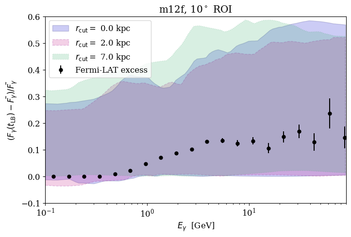
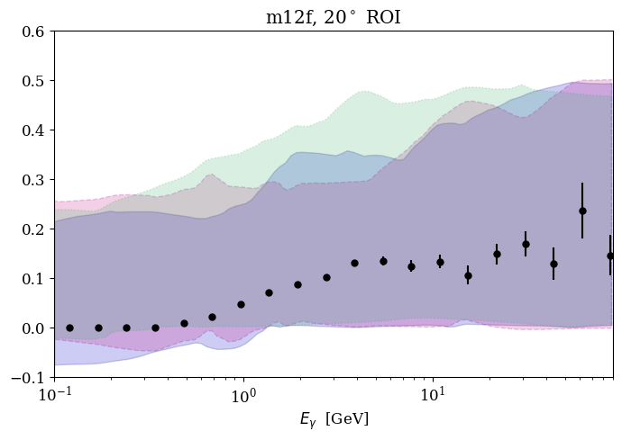
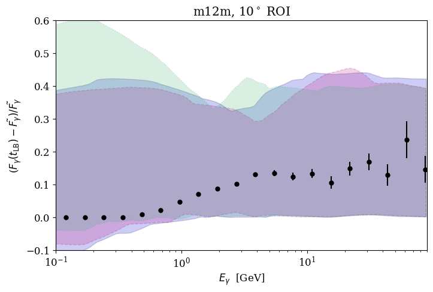
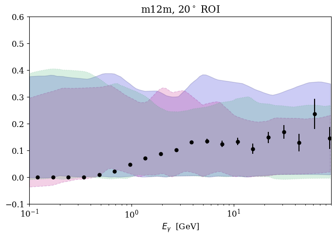
图注：星系m12f（上）和m12m（下）在10°（左）与20°（右）感兴趣区域内的残差能谱范围。阴影给出回望460至20 Myr期间快照的第25与75百分位。蓝、粉、绿分别表示径向排除距离0、2、7 kpc。黑色点线为Fermi-LAT在10°区域测得的超额。所有所考察视场及径向切选下，观测超额均位于第25与75百分位之间，许多模拟残差的幅度更大。
怎么看这张图：纵轴/色标为相对基线的分数残差，不是绝对通量。先比较同一行不同切选，理解物理时间散布；阴影不是统计置信带。右列20°模拟仍叠加10°观测作尺度参考，加上模拟整体偏亮，不能据此视为同口径拟合。 原图直接支持本文核心方法、结果或限制；图注已按HTML原文逐项翻译。
来源与置信度：arXiv HTML；source verified；https://arxiv.org/html/2610.32845v1/figures/GCE_spread_m12f_roi_10.png；https://arxiv.org/html/2610.32845v1/figures/GCE_spread_m12f_roi_20.png；https://arxiv.org/html/2610.32845v1/figures/GCE_spread_m12m_roi_10.png；https://arxiv.org/html/2610.32845v1/figures/GCE_spread_m12m_roi_20.png
图5
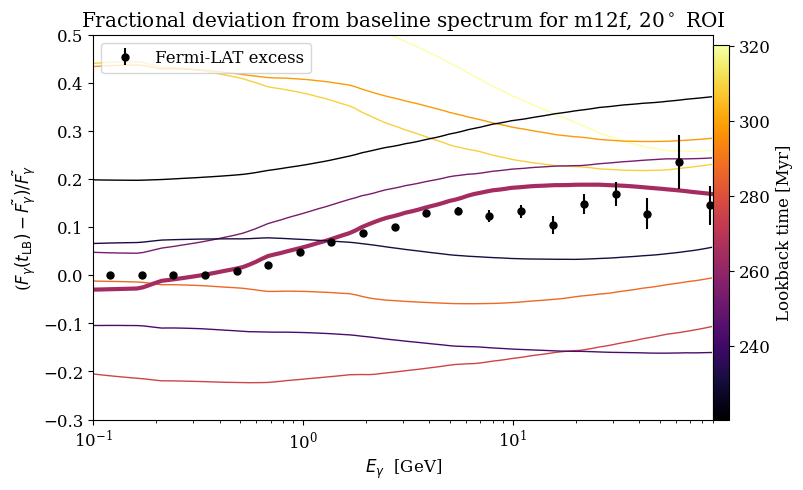
图注：星系m12f在100 Myr时段内部分样本的残差能谱。黑色点线为Fermi-LAT测得的伽马射线超额。一条与其相似的谱用粗线标出，即第III.4节和图6讨论的实例。这组残差具有多样形状与幅度，说明“超额”可出现在0.1至100 GeV之间不同的能量范围。
怎么看这张图：纵轴/色标为相对基线的分数残差，不是绝对通量。粗线是被选出的相似实例，应与其他时刻的多样谱形一起读。图中没有定义匹配阈值或统计发生频率，不能从粗线的存在推出银河系超额的起源概率。 原图直接支持本文核心方法、结果或限制；图注已按HTML原文逐项翻译。
来源与置信度：arXiv HTML；source verified；https://arxiv.org/html/2610.32845v1/figures/GCE_m12f_over_100Myr.png
图6
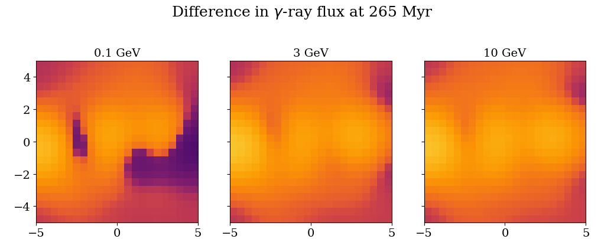
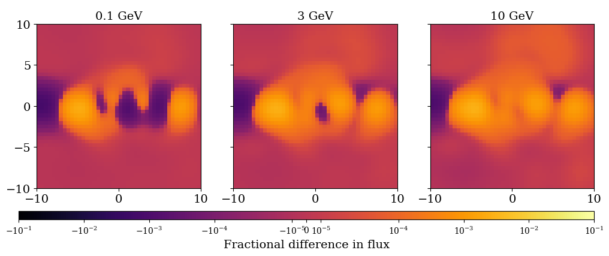
图注：m12f的一个残差通量实例：该快照的残差能谱与Fermi-LAT测得的银河中心伽马超额相似。上方为10°感兴趣区域，下方为20°区域。中央10°内形态大致球状，并在近期发生若干成团超新星的位置出现子结构。
怎么看这张图：纵轴/色标为相对基线的分数残差，不是绝对通量。把这张空间图与图5同一实例的谱对应；近球形之外的子结构及正负残差同样属于模型预测。它展示前景模仿信号的可能性，而非经过LAT响应和观测似然检验的替代模型。 原图直接支持本文核心方法、结果或限制；图注已按HTML原文逐项翻译。
来源与置信度：arXiv HTML；source verified；https://arxiv.org/html/2610.32845v1/figures/GCE_plot_m12f_snap_1158_rfilt_7.0_lat_lim_0.0872665.png；https://arxiv.org/html/2610.32845v1/figures/GCE_plot_m12f_snap_1158_rfilt_7.0_lat_lim_0.174533.png
强相关工作
同一模拟路线的直接前作是 Sands 等2025年关于完整宇宙线能谱的银河中心伽马辐射研究（原文参考32，arXiv:2509.18351），它解释本文绝对谱与观测的相似和偏差；Hopkins 等2022年的宇宙线谱及次级/初级比研究（参考17）则是输运模型背景。本文在这条链上增加的是按时间构造残差和检查 GCE 样实例，而不是一套独立的银河系参数拟合。
在观测解释链上，Calore、Cholis、Weniger 2015年的背景系统误差研究（参考7）说明前景选择的重要性；Cholis等2015年的电子宇宙线爆发解释（参考9）与本文共享时变注入的物理思路，但其理想化源历史与本文自洽恒星反馈不同。Daylan等2016年的暗物质解释（参考11）是需要与更完整前景比较的候选解释，不是已被本文重新拟合并排除的对手。
同一事件 / 同类源线索：
相似工作：
基础理论 / 方法工作：
相反观点 / 张力线索：
2. Collapsars Are Not Heavy $r$-Process Factories
- 来源：arXiv / astro-ph.HE
- 链接：https://arxiv.org/abs/2610.31758
- 作者：Ore Gottlieb, Danat Issa, Jonatan Jacquemin-Ide
- 公告 / 来源日期：2026-10-26
- 阅读层级：重点精读
- 评分：novelty 8/10，importance 8/10，relevance 8/10，final 9.00/10
- 推荐理由：将中子化时间与磁化抛射条件联立得到电子丰度下界，直接检验坍缩星重r过程贡献，须核乐观边界和例外。
中文题目：坍缩星能否制造重 r 过程元素：中子化与抛射的条件冲突
做了什么：坍缩星吸积盘若要向星系贡献重元素，同一团气体必须先变得足够富中子，又在落入黑洞前逃逸。作者将这两个条件放进同一个磁化盘框架：弱磁场有利于高密度和弱反应，却难以顶住恒星回落气体的冲压；强磁场能驱动外流，却使盘增厚、内流加快，并通过喷流效率限制允许的吸积率。
在黑洞质量3个太阳质量、自旋0.3、喷流功率上限约5×10⁵¹ erg/s、解束缚半径10个引力半径的有利设定下，逐半径选择最有利于中子化的温度，得到电子丰度下限约0.33；磁通增强到磁阻塞态时升至约0.49，均高于常用重r过程门槛约0.25。这是给定发动机与盘结构条件下的下界。外盘组成、盘厚和内流速度会影响数值，罕见极端吸积及近视界抛射仍未被一般性排除。
为什么重要：单独证明盘内有富中子气体，并不能证明它成为星际重元素。本文的价值在于把GRB发动机功率、磁通、盘流入时间和抛射半径连成一个可检验约束链，挑战常见坍缩星作为重r过程主导来源的条件。标题很强，结论应读作对一类物理参数空间的限制，而非所有大质量恒星死亡都不产重元素。
理论 / 观测 / 仪器方法价值：逐点最大化净中子化率是一种构造有利包络的方法：允许每个位置选择最优温度，所得电子丰度比真实热历史更低，因此仍达不到门槛时约束有力。它依赖密度、流速和成分演化约束；若把净速率固定在初始电子丰度，或忽略α粒子锁住自由核子，会得到过度乐观的产额。
为什么应该关注：这项工作把GRB的束射修正和持续发动机功率直接联系到核合成。读者应特别关注极亮GRB的峰值与时间平均功率差异、磁化盘外流的真实发射半径，以及中微子透明性。它不直接给出地球可探测中微子通量，也不能把合并后吸积盘的结论一并否定。
展开详细解读：文章讲解、背景、理论、重点章节、图表与相关工作
文章详细讲解
科学问题：重r过程需要大量自由中子，通常用电子丰度衡量气体的中子富集程度。但化学演化关心逃离系统的物质，而不是盘中短暂出现的极端状态。作者把“变富中子”和“能被抛出”视为必须由同一气团同时满足的条件，检验通常GRB发动机是否有这样的窗口。
作者怎么做：先用磁通和黑洞自旋计算喷流效率，再把观测代表性的发动机功率上限转成吸积率上限。利用两组广义相对论磁流体模拟标定盘厚与流速，计算密度和可停留时间。沿气体从外向内的路径，不指定一条可能不可靠的热演化曲线，而在每一处取净中子化最快的温度，积分不断变化的电子丰度。
关键结果：在最弱但仍可有效驱动外流的磁通附近，最大吸积率约0.4个太阳质量每秒，气体到10个引力半径时仍有电子丰度约0.33。更强磁通提高喷流效率、降低同功率允许的吸积率，最低电子丰度反而升高。作者还构造解析速率包络，给出能独立检查数值积分方向与尺度的必要条件，说明这不只是某次模拟的瞬时结果。
局限和下一步：边界取决于黑洞质量、自旋、持续喷流功率、盘厚、径向速度与可抛射半径；这些量不能任意独立放宽。外盘延伸并纳入核统计平衡后最低值可降到约0.31，仍高于所用门槛。极端发动机、不同磁场几何和近视界直接抛射需要专门模拟；重r过程门槛本身也随熵和膨胀时间变化，应由完整核反应网络检验。
关键结果是怎么做出来的
第一步用观测限制供给，而不是先假定任意高吸积率。喷流功率等于自旋效率、磁通效率和静质量能流之积。在本文基准自旋与磁通下，上限对应约0.4个太阳质量每秒；磁通从20增到50，同功率下允许的供给明显降低。图3中的粗线就是这项联合限制，不能把高吸积率与高磁通随意拼在一起。
第二步将供给换成密度和反应时钟。图2比较解析剖面与两组不同自旋的GRMHD模拟，基准盘在10个引力半径处的厚径比约0.21，并非极薄盘。流速与厚度相连，给出毫秒量级内流时间；密度既随吸积率上升，也会因盘厚和流速增大而下降。磁支撑的收益与损失由此进入同一计算。
第三步积分净弱反应。电子俘获使质子变成中子，正电子俘获反向改变组成；随着电子丰度下降，两者差额会改变。作者每一步重新最大化净速率并更新组成，而不是把初始最快速率一直延长。图5给出磁通20、30、40、50时到解束缚半径的下限0.33、0.44、0.48、0.49。
第四步用解析包络检查结果。电子丰度0.5时的速率包络近似随密度平方增长；降低电子丰度后的速率还受立方因子压低。积分得到一个无量纲反应预算，若预算小于0.75，连最有利轨迹也达不到0.25。基准预算约0.51，解释为什么单靠调温无法补偿快速内流。
第五步逐项检查有利条件是否遗漏。先富中子再逐渐磁化的气体，在磁通被带入和形成外流前可能重新接近较高电子丰度；作者比较约25 ms以内的组分平衡时间与约70 ms的磁通平流时间。附录检验更远外盘、α粒子核统计平衡、中微子吸收及透明近似。远外盘自由核子外推可显著降低电子丰度，但纳入α粒子后作用减弱，不能只引用最乐观的自由核子外推。
最后看图4的观测边界。GRB 221009A的瞬时峰值约9.9×10⁵³ erg/s不能代替持续发动机尺度；超过600秒的总辐射能意味着平均各向同性等效光度低得多。本文保留极端例外，但不以一个峰值就证明大质量、长期富中子外流存在。
展开背景、理论、公式、模型和章节导读
背景知识
r过程指中子俘获快于β衰变的核合成路径。重峰和锕系元素需要足够高的中子与种子核之比；低电子丰度通常有利，但不是唯一控制量。温度决定何时组装种子核，熵和膨胀速度决定自由中子能否在物质冷却前被有效利用。
坍缩星是大质量旋转恒星核心坍缩成黑洞并形成吸积盘的情景，也是长GRB发动机的重要候选。与中子星合并不同，恒星外层还会向中心回落，既供给盘，也施加阻挡外流的冲压。把合并残余盘的核合成经验直接套到坍缩星，容易漏掉这个环境差异。
在稠密吸积盘中，电子俘获能使气体中子化；中微子发射带走能量有助于维持稠密结构。磁场较弱时，这种条件可能容易满足，但物质未必能逃走。重元素若最后全部进入黑洞，对星系化学丰度就没有贡献，因此盘内组成和抛射产额必须区分。
当大尺度磁通积累到磁阻塞态，磁压力和应力强到足以影响吸积流并高效驱动喷流。强场同时使盘更厚、流动更快，削弱弱反应累积。本文的核心不是否认磁场能驱动外流，而是指出促成外流的同一条件可能破坏重核合成所需的低电子丰度。
基础理论 / 方法脉络
电子丰度是单位重子数对应的质子数。对自由中子与质子组成的气体，它也可理解为质子比例；电中性把净电子数与它联系起来。电子俘获降低这个比例，正电子俘获提高它，净变化还依赖电子简并度、温度及当时成分，不能只用一个恒定反应寿命描述整个轨迹。
内流时间是气体可供弱反应工作的时间。质量守恒把吸积率、盘厚、密度与流速相连，因此调慢流速既延长反应时间又提高密度，作用很强。本文约束对盘厚与流速的高次幂敏感，正说明解析下界虽不依赖热历史，仍依赖动力学剖面。
磁通决定把吸积静质量能转成喷流功率的效率。在观测功率固定时，更强磁通并不允许同时保持同样高的吸积率。用这条约束与外流形成所需的最低磁化相交，才得到图3可用参数区域；脱离功率线只看低电子丰度色块，会误读论文。
温度优化构造的是偏向重r过程的下界：每个半径都允许气体达到最利于中子化的温度，真实气体通常无法同时实现所有局部最优点。但这里的“保守”只相对于固定动力学框架而言。改变解束缚位置、盘结构或中微子不透明性，必须重新求边界，不能声称热历史独立就意味着所有模型独立。
公式与推导
下面按原文方程1–4、16–22和26–29重排推导；最后的积分过程展开是教学说明。先把喷流功率写为
$a$ 是无量纲黑洞自旋，$\phi_{\rm BH}$ 是按吸积率归一化的磁通，效率均无量纲。固定功率后，效率越大，允许的吸积静质量通量越小。
束射与辐射效率给出观测到发动机的转换：
$\theta_j$ 为小角度近似下的喷流半张角，$\eta_\gamma$ 为伽马辐射效率；使用持续功率才可限制持续供给。本文取 $\theta_j=0.1$、$\eta_\gamma=0.2$，不能直接以峰值光度代表整段演化。
在 $a=0.3$、$P_j=5\times10^{51}\ {\rm erg\,s^{-1}}$ 的基准下，得到
这条式子已固定自旋；若改变自旋应返回完整效率式。它提供图3粗线，和中子化条件共同限制可抛物质。
令 $H$ 为半盘厚度、$v_{\rm in}>0$ 为向内速度，原文采用的盘标度给出
右式是盘的质量守恒。$\rho$ 的单位为 $\mathrm{g\,cm^{-3}}$，$\zeta$ 是无量纲速度系数。更厚、更快的盘同时降低密度并缩短停留时间，因此不是只损失一个反应因子。
定义正的净中子化率及其局部最优值：
两种 $\lambda$ 单位为每秒，分别对应电子和正电子俘获。这里应最大化净差额，而不是只最大化第一项。
沿向内轨迹 $dr/dt=-v_{\rm in}$，组成方程成为
因积分方向向小半径，右侧为正仍使 $Y_e$ 下降。作者在 $R_{\rm unb}=10r_g$ 停止；继续积分至无法抛出的区域不能算作化学富集。
原文为解析检查采用速率包络
立方因子编码逐渐中子化后的速率削弱。若省掉它，会高估气体能继续降低电子丰度的能力。
定义沿流动的无量纲反应预算，再积分上式：
推导用 $dY_e/d\mathcal B\geq-8Y_e^3$，从初值0.5积分得到 $Y_e^{-2}\leq4+16\mathcal B$。因此要达到0.25至少需要 $\mathcal B\geq3/4$；基准约0.51还不够。这个必要条件与数值最优轨迹的约0.33一致，但其密度、速度、外边界和自由核子假设必须同时保留。
模型拟合 / 应用方法
这不是用元素丰度观测拟合一条经验曲线。首先输入的是发动机功率与喷流几何假设，再输入由GRMHD剖面标定的盘厚和速度系数。图2比较自旋0.8与0.5的两组模拟，而参数边界的有利基准采用自旋0.3；因此标定支持的是近似动力学形状，不意味着整个参数平面都有直接数值实验覆盖。
数值求解在各半径计算密度，搜索使净弱反应最大化的温度，再推进电子丰度，最后读出10个引力半径处的值。作者同时计算解析预算与轮廓线作为交叉检验。这里的阴影与等值线不是贝叶斯可信区间，0.33不是带测量误差的“观测值”，而是所选参数和速率模型下的极值估计。
最敏感的系统项是动力学。预算对盘厚近似具有负五次幂、对速度系数具有负三次幂依赖，且对黑洞质量、自旋效率和磁通也很敏感。因此在复用时应先明确盘厚和流速是否仍由同一种磁支撑状态给出，不能为了获得重r过程把各参数分别调到最有利值而丢掉它们的物理联系。
附录的检验限定了哪些近似可接受。纳入外盘核统计平衡后，α粒子减少可参与弱反应的自由核子，使单纯自由核子向远外盘延伸得到的低电子丰度回升；中微子吸收倾向提高电子丰度。作者检查喷流形成后中微子球主要位于所用径向域以内，支持透明近似，但最早期不透明阶段不能照搬同一速率界限。
实际后续应把这些必要条件与外流轨迹和核反应网络联算，统计真正逃逸物质的质量、熵及膨胀时间，而不是只报盘中最低电子丰度。罕见超高吸积率、直接近视界抛射及不同盘磁场几何可能改变边界；本文没有把这些例外的发生率或星系总产额作完整人口合成。
重点章节 / 结果段落怎么读
从I与图1读起，区分SANE、亚MAD和MAD的密度、磁支撑与抛射能力；抓住同一气体须同时中子化和逃逸这条逻辑。
读II的功率约束时，将束射角、辐射效率、自旋和磁通一起代入，检查图3粗线为何随磁通下降，而不是把吸积率当独立输入。
读III与图2–3，先核对盘剖面的模拟标定，再跟随净反应温度优化及解析预算，理解热历史无关的范围。
最后连读IV、图4与附录A，检查峰值/平均功率、外盘α粒子和透明性三个边界；它们决定标题中的强判断能适用于哪类发动机。
关键图表与解读
图3
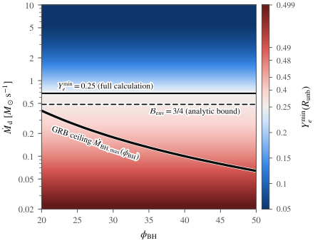
图注：在吸积率与无量纲磁通平面上，解束缚半径处的最低电子丰度。细实线（虚线）为数值（解析）估计的电子丰度0.25等值线。粗线表示GRB种群功率上限：最大黑洞吸积率为0.4个太阳质量每秒乘以(20/磁通)²，采用喷流功率5×10⁵¹ erg/s、自旋0.3、黑洞质量3个太阳质量。沿该GRB上限，所有所考察磁通下的最低电子丰度均不低于约0.33。
怎么看这张图：关键是粗功率线与0.25等值线是否相交，而非蓝色区是否存在。图中下界固定盘结构及10rg抛射条件；低电子丰度色块落在通常功率限制以外，不能独立取用。 原图直接支持本文核心方法、结果或限制；图注已按HTML原文逐项翻译。
来源与置信度：arXiv HTML；source verified；https://arxiv.org/html/2610.31758v1/Mdot-phi.png
图4
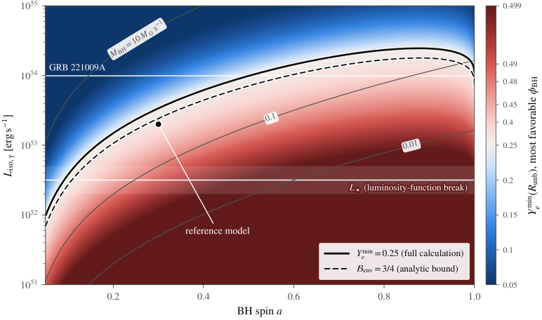
图注：最有利组成下界随黑洞自旋a与各向同性等效伽马光度Liso的变化。颜色为用方程22及方程2自旋效率得到的解束缚半径处最低电子丰度；取黑洞质量3个太阳质量、喷流半张角0.1、伽马效率0.2，并在磁通20至50内最小化，最小值出现在20。圆点表示基准上限模型（a=0.3，喷流功率5×10⁵¹ erg/s），最低电子丰度约0.33。实线为完整数值计算的0.25等值线，虚线为解析预算达到3/4、方程29下界达到0.25的位置。灰色细线表示磁通20时吸积率0.01、0.1、10个太阳质量每秒。水平线标出观测各向同性等效峰值光度：长GRB光度函数折点10^(52.5±0.2) erg/s（线及不确定度阴影；Wanderman与Piran，参考103）和GRB 221009A的9.9×10⁵³ erg/s（Lesage等，参考55）。峰值会高估持续喷流功率和吸积率：221009A在红移0.151、超过600秒内释放约10⁵⁵ erg各向同性等效伽马能量，对应平均光度不高于约2×10⁵² erg/s。色标在电子丰度低于0.25时对丰度线性标度（蓝），高于0.25时对0.5减丰度采用对数标度（红）。
怎么看这张图：先定位圆点，再看改变自旋或持续光度能否越过边界。水平观测线是峰值而非平均值，色标两侧定义也不同；图允许极端发动机例外，并未证明例外能提供足够总抛射质量。 原图直接支持本文核心方法、结果或限制；图注已按HTML原文逐项翻译。
来源与置信度：arXiv HTML；source verified；https://arxiv.org/html/2610.31758v1/Liso-a.png
强相关工作
直接的理论张力来自Siegel、Barnes与Metzger 2019年“坍缩星是r过程重要来源”的工作（原文参考89）。两者讨论同一候选渠道，但本文强调恒星回落、外流形成磁通与GRB发动机功率共同限制；不能只比较一个最低电子丰度而忽略边界条件。该关联用于定位分歧，不代表本日报已独立复算旧工作的全部产额。
Issa等2025年的全球三维中微子GRMHD坍缩星模拟（参考38）提供本文剖面和抛射讨论的重要背景，本文用修正中微子吸收处理的模型作标定。Siegel与Metzger 2017年的合并残余盘研究（参考90）则说明为何来源必须分开：合并盘可带有先存富中子物质，且缺乏同样的恒星回落冲压。新约束不应未经重算就推广到合并渠道。
同一事件 / 同类源线索：
相似工作：
（未提供）
基础理论 / 方法工作：
相反观点 / 张力线索：
3. Three subpopulations of binary black holes in mass, spin magnitudes and tilts following GWTC-5
- 来源：arXiv / astro-ph.HE
- 链接：https://arxiv.org/abs/2610.32935
- 作者：Asad Hussain, Maximiliano Isi, Aaron Zimmerman
- 公告 / 来源日期：2026-10-26
- 阅读层级：重点精读
- 评分：novelty 8/10，importance 8/10，relevance 8/10，final 9.00/10
- 推荐理由：259双黑洞多维人口分层及似然方差控制识别三类自旋，分量数与形成通道等同关系需审查。
中文题目：GWTC-5 双黑洞：三类质量相关自旋成分及其解释边界
做了什么：作者对GWTC-5中259个误报率低于每年1次的双黑洞事件进行分层种群推断，同时建模主星质量、质量比、两个黑洞的自旋大小与方向，并校正探测选择效应。三成分模型分出接近零自旋、约0.2且偏对齐的中等自旋，以及宽分布高自旋三类；成分比例随主星质量变化，低自旋在约35个太阳质量附近占优，高自旋在约60个太阳质量以上占优。
结果比只用有效自旋区分形成渠道更细，但成分不是已识别的三条唯一形成路径。低自旋成分偏好精确零值的贝叶斯因子依赖给定先验与模型；其看似朝轨道平面集中的方向分布，可由零自旋注入与测量几何重现。高自旋与层级并合相容，也允许其他起源，特别不能把近零自旋的方向后验直接解释为特殊天体物理取向。
为什么重要：引力波种群的平均有效自旋会掩盖两个成员之间和不同质量段之间的差异。本文把质量依赖的混合比例与两个成员的自旋一起推断，揭示同一总分布可能由性质不同的群体叠加而成。更重要的是，它展示非常窄的自旋结构能被数值积分和先验几何影响，要求形成渠道解释建立在可辨识性的检查之上。
理论 / 观测 / 仪器方法价值：可借鉴的技术是用截断高斯混合近似事件后验与注入选择项，使很窄的自旋种群也能稳定计算积分。作者还增加第四成分、放宽质量比分布先验并进行零自旋玩具注入，检验模型自由度和数值方差。复用时需要保留事件先验、检测效率与群体模型的一致归一化，不能只聚类事件后验中值。
为什么应该关注：这一分解为恒星双星演化、致密星团层级并合及AGN盘渠道提供可比较的质量—自旋目标。当前最值得追踪的是高质量成分的次星也可能具有较高自旋，以及低质量高自旋尾是否真的共享同一形成机制；两者都需要更大的样本和更灵活的质量依赖模型，不能由本文的三条曲线直接定案。
展开详细解读：文章讲解、背景、理论、重点章节、图表与相关工作
文章详细讲解
科学问题：双黑洞由哪些形成环境贡献，不能只靠一次并合的质量或一个有效自旋参数判断。不同渠道可能产生相近的单事件信号，却在两个成员的自旋、方向和质量比的联合分布中留下差异。作者问的是当前样本能否支持可区分的统计成分，以及这些成分如何随质量改变。
作者怎么做：选择259个通过误报率门槛的事件，使用其参数后验样本与模拟注入的选择信息，构造三成分分层模型。每一成分有自己的质量比、自旋大小及方向分布，比例随主星质量分段变化；整体质量谱使用断裂幂律加两个峰。为计算近零自旋这类窄结构，采用截断高斯混合加速并稳定积分，而不是只对事件点估计做聚类。
关键结果：低自旋群体的两个成员自旋集中在约0.02，90%预测分布在约0.06以下；中等自旋群体约0.2，方向较偏向轨道角动量；高自旋群体的主星约0.7、次星约0.6但区间很宽。低自旋在35个太阳质量附近的比例约0.8，高自旋在60个太阳质量以上占优，约20个太阳质量处也可有小比例贡献。
局限和下一步：三个成分是所选分布族下的数据描述，不等于恰有三个形成渠道。第四成分与已有中高自旋成分混淆，说明当前模型没有稳定分出更多独立结构；不证明宇宙中不存在第四来源。低自旋方向的峰值有明确测量几何解释，高自旋低质量尾又被假定与高质量端共享同一自旋分布，未来需更灵活模型和更大样本检验。
关键结果是怎么做出来的
第一步明确样本与选择。259个双黑洞的事件后验具有不同宽度、退化和测量先验，不能把每个后验中值当无误差样本。作者把每个事件的似然贡献嵌入总体积分，并用模拟注入校正不同质量、自旋系统被探测的概率，得到本征而非单纯探测到的分布。
第二步允许混合比例随主星质量变化。三个常数区间由两段线性过渡连接，四个转折质量共享排序条件。各成分比例始终相加为1；标签在采样后按平均自旋重新排列，避免人为预设某个标签必须高自旋。图3中的质量转折因此是总体结构推断，而不是逐事件硬分类。
第三步看图2的联合自旋分布。低自旋峰非常窄，两成员都接近零；中等群体约0.2且偏对齐；高自旋群体宽，方向与各向同性相容。约0.7和0.6的高自旋中心值伴随约0.3–0.4的宽不确定度，不宜写成精确测出了两颗二代黑洞。
第四步理解低自旋证据。给定模型和先验，对精确零自旋的偏好为十进对数贝叶斯因子约6.1，其约0.2–0.3的不确定度来自计算估计。这不是“6.1σ”，也不意味着所有双黑洞零自旋。附录A2用150个零自旋玩具事件、只通过有效自旋约束，复现方向向轨道平面集中的假象，提示幅度接近零时方向的物理解释尤其脆弱。
第五步检查与质量比及模型自由度的联系。低自旋成分更偏近等质量，高自旋质量比分布宽而近于平坦。增加第四成分后高自旋区发生分担和混淆；放宽质量比宽度先验会增加似然估计方差，并使中低质量的高自旋比例更不确定。因此主要三类结构有支持，但其边界、低质量尾和物理归属仍不能脱离数值稳健性讨论。
展开背景、理论、公式、模型和章节导读
背景知识
恒星质量双黑洞可以经历孤立双星演化，也可以在致密环境中动态配对；已合并过的黑洞还能再次并合。不同过程改变质量、自旋大小及其相对轨道的方向，但它们的预测往往重叠，所以形成渠道辨识通常需要总体而非单个事件的信息。
引力波对自旋的测量并不对所有方向同样敏感。沿轨道角动量的组合对相位影响较强，轨道平面内分量常更难约束；质量比又与自旋存在退化。于是一个方向后验的形状可能同时反映物理分布和测量几何，不能只看直方图就宣称存在取向机制。
分层推断把每个事件的不确定性向上带入种群参数，回答“哪一种总体最容易产生这些数据”。探测器并非均匀看见所有并合，重系统与有利自旋配置的可探测体积可能不同，因此观测样本比例与宇宙中的本征比例需要选择函数连接。
混合模型用少数简单分布近似复杂总体，能清楚描述数据，但一个统计成分可能包含多种物理渠道，一种渠道也可能跨越多个成分。本文的重要推进是解析质量与两个成员自旋的联合结构，同时展示何处还无法从统计成分走到唯一的形成历史。
基础理论 / 方法脉络
黑洞无量纲自旋是角动量相对于质量平方的比值，取值在0与1之间；自旋倾角指自旋与轨道角动量的夹角。幅度很小时，即使方向在数学上仍可定义，其对波形的影响也趋于消失。由此会出现“方向后验看似有结构，但数据几乎不测量方向”的情形。
本文分别描述两个成员的自旋大小，并用相关的双变量截断高斯与均匀成分描述方向余弦。截断保证物理范围正确。质量比也用截断高斯；其未截断中心可以大于1，但被保留的物理质量比仍小于等于1，这只改变区间内的形状，不产生质量比大于1的系统。
总体似然涉及对每个事件真实参数的积分。若群体分布很窄，而事件后验样本在该区域稀疏，直接蒙特卡洛重加权会变得不稳定，甚至把数值波动当成尖锐物理峰。截断高斯混合提供连续近似并让部分积分解析化，降低这一危险，但近似质量与选择积分仍需验证。
贝叶斯因子衡量不同假设的边际证据比，包含先验体积效应。对零自旋这类嵌套极限，先验与参数化尤其重要。反过来，低自旋方向向轨道平面集中可源于有效自旋接近零以及平面内较大的可容许体积；作者的注入实验用于揭示这一机制，而不是发现了一个新的平面取向形成渠道。
公式与推导
以下将本文混合模型与标准分层推断串联；选择校正似然和有效自旋式为教学补充。设 $m_1$ 为主星质量、$q=m_2/m_1\leq1$，$\boldsymbol\chi$ 表示两自旋大小，$\mathbf c=(\cos\theta_1,\cos\theta_2)$，则模型结构为
$\Lambda$ 是群体超参数，$\vartheta$ 是单事件本征参数。这里的质量依赖进入混合比例，单个成分的自旋分布不再任意随质量变化，这也是低质量高自旋尾解释的限制。
原文在常数区间之间采用线性衔接，可在一段过渡内写为
四个有序转折质量决定两段过渡，端点比例满足归一化。这让成分可平滑换主导地位，但不等价于对任意复杂质量结构的无参数恢复。
质量比的截断高斯为
$q,\mu_q,\sigma_q$ 都无量纲。即使 $\mu_q>1$，归一化积分也只在物理区间内，得到的是趋向等质量的形状，而不是非物理取值。
方向分布的原文结构可表示为
第一项对应两方向余弦均匀，第二项是有相关性的双变量截断高斯。$\zeta_k$ 是混合权重；宽分布与各向同性相容不表示后验必须精确等于均匀。
为连接事件数据，条件于检测数量的标准教学似然是
这里忽略独立的总体率因子，$N=259$；若同时推断率需另加泊松项。事件后验不能直接作为似然，重加权时必须除去各自的参数估计先验。
选择效率定义为
模拟注入提供 $P_{\rm det}$ 的积分信息。漏掉此项会把可探测性差异写进天体物理比例；连续近似和积分方差检查决定极窄自旋成分能否数值可信。
方向退化可用有效自旋看清：
这是波形敏感的一个无量纲组合。小幅度、平面方向或正负抵消都可给出接近零的值，故测得它很小并不唯一确定每个自旋；附录玩具注入用这一几何解释方向后验。
最后区分预测分布与模型证据：
图2是把超参数不确定性积分后的后验预测分布，轮廓围住10%、50%、90%概率；$Z$ 为边际证据。原文 $\log_{10}\mathcal B\simeq6.1$ 是给定先验下零自旋假设的证据比，不是高斯显著性单位。
模型拟合 / 应用方法
输入包括满足误报率门槛的259个事件、首选波形模型的参数估计样本和注入集合。总体主质量采用断裂幂律加两个高斯峰，红移分布在共动体积与源时率基础上允许幂律演化。每一成分再有质量比、自旋大小和倾角超参数；不能把图2理解为不依赖质量谱或红移假设的纯数据直方图。
比例模型由三个常数区间和两段过渡组成，共享四个有序转折质量。采样时不强制A、B、C按自旋排列，之后按两个成员平均自旋之和赋标签。这样的后处理避免标签交换污染图像，却不消除不同统计成分实际重叠时的物理歧义。
数值上用截断高斯混合处理事件后验与选择项，使狭窄自旋峰仍可积分。质量相关部分还依赖蒙特卡洛，因此基准限制质量比宽度至少0.2以控制方差。放宽到0.1后，高自旋成分的质量比与混合比例变宽，同时似然方差上升；附录图19提醒先验敏感性与数值稳定性是相连的。
主要约束应连同区间读：低自旋比例在35个太阳质量附近约0.8±0.1；高自旋开始占优的过渡大致从40个太阳质量延伸到60个太阳质量，但端点很不精确。约20个太阳质量处高自旋比例约0.13，上下不确定度约0.11和0.09。更高质量端事件很少，超过100个太阳质量处尤其不能把先验支持当成充分数据测量。
稳健性检查包括多一个质量比例区间、第四成分、更宽质量比先验和零自旋注入。前三者检验模型自由度与计算方差，最后一项检验方向解释。未来若把成分映射成物理渠道，还需对具体形成模型作同样选择校正，并允许一个渠道覆盖多个统计成分；本文没有给每个渠道一个唯一占比。
重点章节 / 结果段落怎么读
先读II和图1，明确质量谱、成分内分布与质量依赖比例分别负责什么，避免把每个成分当作独立任意质量函数。
读III图2–4时，将自旋大小、方向、比例和质量比一起看；仅看自旋中心值会丢掉宽误差与成分重叠。
随后读附录A2图8，跟随零自旋注入为何出现平面方向峰；这是正确解释低自旋群体的必要节点。
最后读附录A3图17–21与讨论，把第四成分混淆和质量比先验敏感性放回形成渠道解释，区分可恢复结构与唯一物理归属。
关键图表与解读
图2
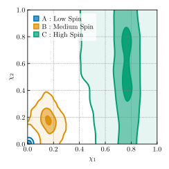
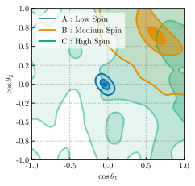
图注：三类子种群的自旋大小（左）和倾角余弦（右）的推断后验预测分布，轮廓包围10%、50%和90%可信区域。一类高度集中在很低自旋，并不偏好沿轨道角动量的自旋分量；第二类偏好约0.2的自旋及较接近轨道角动量方向的取向；第三类偏好大于约0.5的主星自旋，次星自旋与倾角分布都较宽。
怎么看这张图：左图确定幅度后再解释右图。近零自旋时方向几乎不可测，其平面方向峰可由测量和先验几何产生，参见图8；高自旋群体的宽轮廓也不支持唯一的形成渠道。 原图直接支持本文核心方法、结果或限制；图注已按HTML原文逐项翻译。
来源与置信度：arXiv HTML；source verified；https://arxiv.org/html/2610.32935v1/component-by-component-mag-PPD_kde.svg；https://arxiv.org/html/2610.32935v1/component-by-component-tilt-PPD_kde.svg
图3
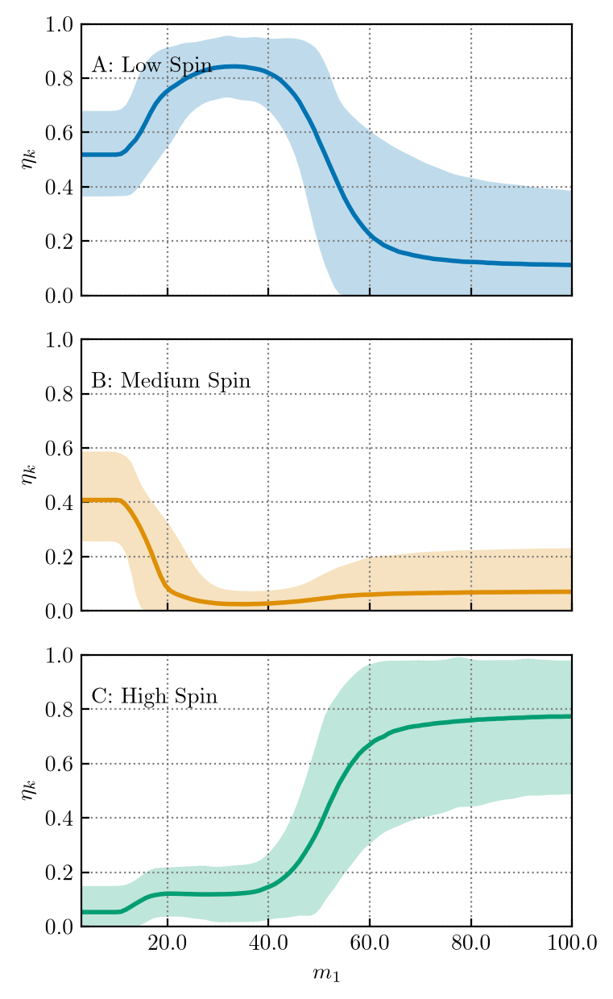
图注：三类子种群混合比例随主星质量变化的推断分布，比例之和限制为1。三个种群按图2的不同自旋分布命名。低自旋群体在主星质量低于约60个太阳质量时占优，尤其在约35个太阳质量附近；中等自旋群体在低于约15个太阳质量时与其规模相当。高自旋成分在超过约60个太阳质量处占优，在约20个太阳质量处也有小但非零的贡献并延伸向更高质量。
怎么看这张图：比较成分交接的质量尺度与宽区间，不将三条曲线误差当成独立。低质量高自旋尾在模型中共享高质量成分的自旋分布，不能仅据这张图证明同一物理形成来源。 原图直接支持本文核心方法、结果或限制；图注已按HTML原文逐项翻译。
来源与置信度：arXiv HTML；source verified；https://arxiv.org/html/2610.32935v1/figures/FiducialModel/eta_vs_m1.png
图8
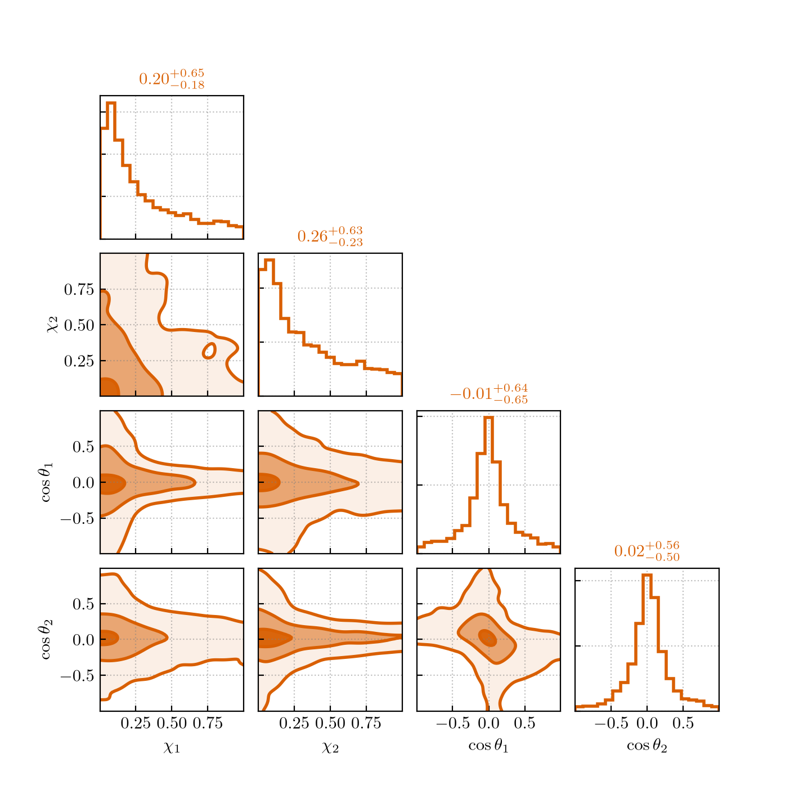
图注：无自旋种群的玩具注入与恢复实验中，自旋大小和倾角余弦的边缘后验预测分布。模型假定双黑洞自旋仅通过有效自旋测量。虽然注入种群无自旋、因而与各向同性取向相容，恢复的自旋倾角却强烈集中在轨道赤道面附近，因为该方向约束弱且先验体积大。
怎么看这张图：这张对照图解释低自旋方向结构的非唯一性。它是简化注入恢复，不是另一组真实观测；应保留其只通过有效自旋测量的假设。 原图直接支持本文核心方法、结果或限制；图注已按HTML原文逐项翻译。
来源与置信度：arXiv HTML；source verified；https://arxiv.org/html/2610.32935v1/figures/PPD_fixed_q_chi_eff_simulation.png
强相关工作
本文参考67的Hussain、Isi与Zimmerman 2025年工作（arXiv:2510.20010）是同一作者团队的统计方法背景，本文将相关计算路线用于质量依赖的三成分模型。参考117的Talbot与Golomb 2023年关于群体似然数值精度的工作与这里窄峰、选择积分和蒙特卡洛方差问题直接相关；本日报按当前论文给出的关联解释，不把被引文章当作已重新精读的额外证据。
基础读物可用参考118的Thrane与Talbot 2019年引力波贝叶斯推断综述理解事件似然、先验和总体选择效应。物理解释方面，层级并合预期较大自旋，与高自旋群体有联系，但次星也偏高以及低质量尾提出额外条件；孤立双星、致密环境和AGN盘不能仅凭本模型的标签一一对应，本文保留了这种形成路径退化。
同一事件 / 同类源线索：
相似工作：
基础理论 / 方法工作：
相反观点 / 张力线索：
（未提供）
相关简报
1. GRB 260924A: Extreme Energetics, Bright GeV Emission, and Exceptional X-ray and Optical Luminosity
- 来源：arXiv / astro-ph.HE
- 链接：https://arxiv.org/abs/2610.32861
- 作者：Nissim Fraija, Peter Veres, Rosa L. Becerra, Antonio Galván-Gámez, Thomas Freeman, Simone Dichiara, Maria G Dainotti
- 公告 / 来源日期：2026-10-26
- 阅读层级：相关简报
- 评分：novelty 7/10，importance 8/10，relevance 10/10，final 9.40/10
- 推荐理由：极亮GRB多波段加43GeV光子约束SSC与反向激波，混合微物理与注能解释有退化，显著但非唯一新机制。
中文题目：GRB 260924A：极高能量储库与多成分余辉的条件性解释
问题、方法与结论：作者联合Fermi/GBM、LAT、Swift及光学近红外观测分析红移3.51的GRB 260924A。各向同性等效瞬时辐射总能量约9.79×10⁵⁴ erg；两次亮脉冲之间仍有BAT和LAT辐射，最高43.3 GeV光子在触发后82秒到达。LAT后四个时段衰减指数为1.30，向前外推低估首时段约2.25倍。固定环境密度随半径的指数为1.2后，正向激波同步/同步自康普顿加反向激波自康普顿可描述光变，后期再增亮用能量注入及微物理演化连接。
意义与贡献：它把极亮GRB的能量预算与早期GeV超额放入统一比较：模型推得注入前动能约7×10⁵⁵ erg，辐射效率约0.12。如此大的能量是各向同性等效量；未可靠测出喷流转折，真实束射能量仍未知，不能据此给发动机确定的绝对能量。
可借鉴之处：观测谱在计数空间折叠响应拟合，LAT主分析用五个不重叠区间，重叠检查不作为独立点重复计数。GBM使用泊松—高斯背景似然，余辉以MCMC探索参数；对早期超额先拟合后段再外推的操作可复用，但外推误差与谱模型条件须保留。
局限与关注点：增加黑体改善部分GBM谱，却依赖背景与归一化边界，没有校准的发现显著性。反向激波解释依赖未分辨的早期衰减，后期单谱段假设也受到光学—X射线谱残差挑战；模型仍未解决早期X射线谱差异。最高能光子支持考察自康普顿，但不是机制的唯一证明。
图24
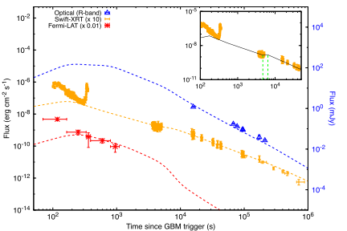
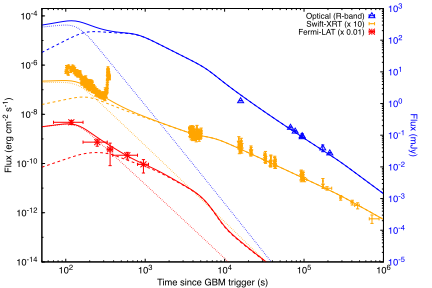
图注：正向激波模型（上）及正向加反向激波联合模型（下）的多波段观测与模型光变。上方插图给出再增亮附近未经平滑的XRT光变。下图虚线、点线分别表示正向和反向激波贡献，实线为二者之和。X射线与LAT通量按图例所示缩放；光学通量密度对应右侧坐标轴。模型曲线使用表22中的后验中位参数。
怎么看这张图：联合模型用反向激波自康普顿补早期LAT超额，并以注入和微物理演化描述再增亮；曲线匹配不表示机制唯一。注意不同纵轴及缩放，未解决的早期X射线谱差异仍在。 原图直接支持本文核心方法、结果或限制；图注已按HTML原文逐项翻译。
来源与置信度：arXiv HTML；source verified；https://arxiv.org/html/2610.32861v1/GRB260924A_Lightcurve_FS.svg；https://arxiv.org/html/2610.32861v1/GRB260924A_Lightcurve_RS.svg
2. Magnetic Reconnection Modifies Cosmic-Ray Transport in the Interstellar Medium
- 来源：arXiv / astro-ph.HE
- 链接：https://arxiv.org/abs/2610.32716
- 作者：Antoine Baldacchino-Jordan, Michal Hanasz, Vinod Pisharody, Dominik Wóltański, Artur Gawryszczak
- 公告 / 来源日期：2026-10-26
- 阅读层级：相关简报
- 评分：novelty 7/10，importance 8/10，relevance 9/10，final 9.05/10
- 推荐理由：电阻MHD参数实验把磁拓扑变化连到B/C和强子伽马，扩散子网格不等于真实重联率测量。
中文题目：磁重联改变宇宙线逃逸：同一扩散系数下的不同 B/C
问题、方法与结论：作者在0.5×1×8 kpc的分层磁流体盒中改变磁扩散率，模拟超新星宇宙线驱动的盘—晕输运。网格尺度31.25 pc，沿场扩散在10 GV取3×10²⁸ cm²/s；磁扩散率取0、30、60、100 pc²/Myr。重联使原先较竖直的磁场出现横向连接，延长宇宙线停留并增加次级硼产生：盘内平均B/C峰从约0.17升到约0.24–0.27，虽然输入粒子扩散系数相同。
意义与贡献：这说明用次级/初级核素比反推传播系数时，磁场连通性也会进入结果。重联不仅改变粒子密度，也改变气体外流；强子伽马发射依赖二者乘积，因此磁扩散率增大并不保证伽马亮度单调增加。
可借鉴之处：可借鉴的是同时保存粒子、气体与磁场方向剖面，并用B/C和强子发射作联合诊断。作者在210–500 Myr求时间平均，舍去初始磁场转向的过渡；原图中的时间散布要与测量误差区分。输入扩散和有效逃逸不是可以直接互换的量。
局限与关注点：这是机制实验，未将AMS-02数据作为拟合目标。模型省略超新星热/动能反馈、辐射冷却加热及宇宙线沿场流动（streaming），磁扩散是有效处方；灰质子处理也未给伽马能谱。结果不能直接用来替代银河系全局传播参数或量化真实重联率。
图5
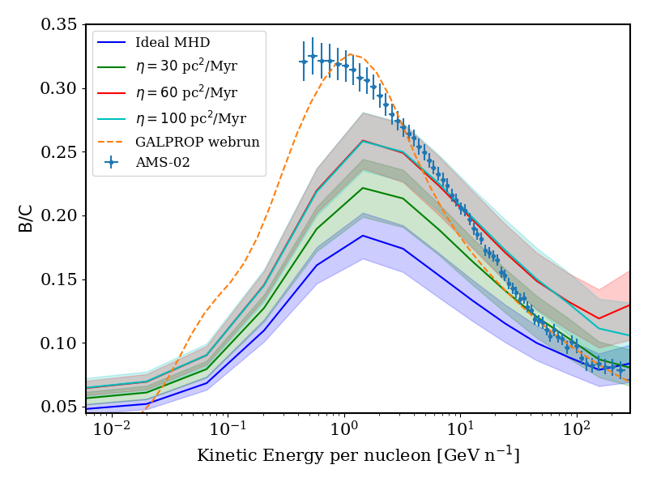
图注：表1四种模型的硼/碳比，在三维盘区z为−0.3至0.3 kpc内取空间平均，并在210至500 Myr取时间平均，横轴为每核子动能；与基准GALPROP WebRun模拟（参考52）及AMS-02实验数据（参考2）比较。
怎么看这张图：输入沿场扩散相同，曲线变化来自磁场几何和逃逸改变。模型未对AMS数据拟合，不能把最接近数据的一条直接称作测得的银河系磁重联率。 原图直接支持本文核心方法、结果或限制；图注已按HTML原文逐项翻译。
来源与置信度：arXiv HTML；source verified；https://arxiv.org/html/2610.32716v1/Figure_5.png
3. The Galactic Center Reference Frame: A 30-Year Solution
- 来源：arXiv / astro-ph.HE
- 链接：https://arxiv.org/abs/2610.31766
- 作者：Jeremy Darling, Jennie Paine, Matthew Hosek Jr., Shoko Sakai, Stefan Gillessen, Tatsuya Akiba-Lewis, Andrea Ghez, Frank Eisenhauer
- 公告 / 来源日期：2026-10-26
- 阅读层级：相关简报
- 评分：novelty 7/10，importance 8/10，relevance 8/10，final 8.70/10
- 推荐理由：30年15SiO脉泽的SgrA参考系实测稳定性直接支撑轨道和引力测试，变源质心给出误差下限。
中文题目：银河中心三十年 SiO 脉泽基准：位置误差与参考架稳定性
问题、方法与结论：作者加入2026年3月VLA三次各5小时、合计15小时的观测，延长1996–2022年的15颗SiO脉泽星相对Sgr A*测量。以43 GHz同视场Sgr A*作相位基准，各谱通道定位后进行加权直线自行拟合。脉泽集合相对位置的加权平均径向不确定度当前约0.08 mas；七颗同时具有红外位置的星将红外参考架自行稳定性推进到赤经10.2、赤纬14.7 μas/年。
意义与贡献：高精度参考架是利用S2等近中心恒星轨道研究黑洞与延展质量的基础。论文的改进不是新探测一颗中间质量黑洞，而是降低射电—红外坐标连接的漂移；它使未来微弱轨道效应更不容易与坐标系统误差混淆。
可借鉴之处：可借鉴的是将参考历元设在加权平均观测时间，减少截距与自行协方差，并明确区分单星位置误差、集合平均位置误差和跨波段参考架稳定性。IRS7谱线与结构变化较大，作者对其特定时段处理，未把所有亮脉泽一律视为稳定点源。
局限与关注点：0.08 mas不是每颗星的位置精度；若停止监测，集合位置误差预计到2030年升至约0.10 mas。与HST–Gaia比较存在系统偏差，自助重采样放宽了部分形式显著性。未发现可信加速度，脉泽亮度变化也不能直接归因为轨道动力学。
图3
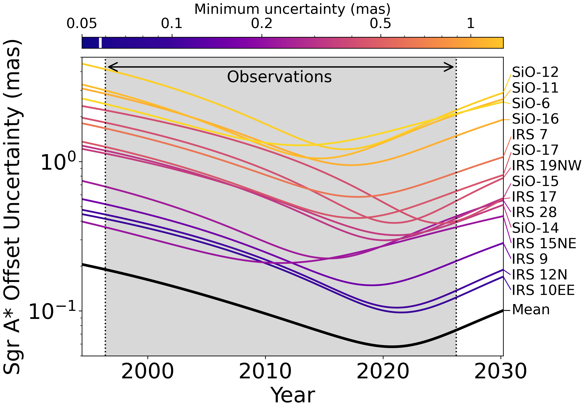
图注：脉泽位置不确定度随时间的变化。曲线根据三十年解（表2），结合方程1和2计算相对Sgr A*位置偏移的不确定度。黑色轨迹为脉泽集合方差加权平均位置偏移的不确定度，色条中的白线标出其最小值。灰色区域表示部分脉泽的三十年观测跨度。超出观测窗口后不确定度增加，显示天体测量向未来和过去外推时精度下降。
怎么看这张图：黑线是集合平均误差，不是每颗星都达到同样精度。当前约0.08 mas与未来误差增长一起读，说明持续监测对坐标基准不可替代。 原图直接支持本文核心方法、结果或限制；图注已按HTML原文逐项翻译。
来源与置信度：arXiv HTML；source verified；https://arxiv.org/html/2610.31766v1/Position_Error_vs_Time_noNutAber_revised.png
4. Local Analogs of Little Red Dots: Clues to the X-ray Weakness
- 来源：arXiv / astro-ph.HE
- 链接：https://arxiv.org/abs/2610.32430
- 作者：Shi-Jiang Chen, Jun-Xian Wang, Zhen-Ya Zheng, Ruqiu Lin, Luis C. Ho, Zhen-Yi Cai, Chang-Hao Chen, Zsofi Igo
- 公告 / 来源日期：2026-10-26
- 阅读层级：相关简报
- 评分：novelty 7/10，importance 8/10，relevance 8/10，final 8.70/10
- 推荐理由：六本地LRD类比源EP堆叠和软X射线约束削弱若干典型模型，但3.3sigma堆叠与高红移外推须保留。
中文题目：爱因斯坦探针看本地“小红点”：弱冕与中等遮挡的可行组合
问题、方法与结论：研究选取红移0.24–0.32、具有V形连续谱与宽线的六个本地小红点类比体，以EP/FXT检验其X射线。两个源X射线正常、四个偏弱；其中三个较可比的弱源堆叠，在静止系0.5–8 keV得到3.5σ、2–8 keV为3.3σ，而软段仅1.9σ并给上限。相对宽Hα或紫外预测，弱源堆叠约缺0.55–0.65 dex；红色连续谱与较大的Balmer线比支持遮挡作用。
意义与贡献：这一近邻样本将高红移小红点的X射线缺失问题转成可直接检验的低能谱形。弱冕加康普顿薄遮挡可以解释观测，不必一律诉诸完全康普顿厚埋藏；但类比体与高红移总体的对应关系仍是待验证假设。
可借鉴之处：作者按源响应、背景及静止系能量堆叠，三源堆叠排除了Hα较弱且曝光短的另一个源。低计数谱固定部分参数，用C统计或含背景约束的PG统计；应分别保留参数误差、堆叠信噪比与上限，不能给所有弱源强行拟合独立的吸收柱密度。
局限与关注点：结果对固定光子指数和吸收模型有依赖。所测2–3 keV光子不利于文中采用的极陡无吸收谱或简单康普顿厚模板，但散射、泄漏及几何自由度仍允许替代解释。需要更深XMM及硬X射线观测，而非将3.5σ堆叠写成每个目标的明确探测。
图3
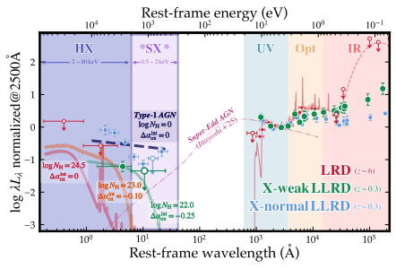
图注：X射线偏弱的本地小红点类比体（绿）、X射线正常的类比体（蓝）及高红移小红点（红）的归一化红外—光学—紫外—X射线谱能量分布，均在静止系2500 Å归一化。类比体数据结合EP/FXT X射线谱和GALEX、SDSS、SPHEREx、WISE测光。红色数据与背景谱模型为Akins等（参考1）的小红点堆叠约束。曲线分别表示典型无遮挡超爱丁顿模型（无量纲吸积率1、黑洞质量10⁷个太阳质量；参考41）；康普顿厚模型（\(NH=10^24.5\) cm⁻²，Δαox=0）；康普顿薄模型（NH=10²³ cm⁻²，Δαox=−0.10）；拟合的X射线偏弱类比体模型（NH=10²² cm⁻²，Δαox=−0.25）；以及无遮挡本地AGN模型（Δαox=0）。
怎么看这张图：先看弱源堆叠在2–3 keV仍有光子，再比较吸收与本征弱冕的组合。所有曲线在紫外归一化，不是同一绝对光度；简单厚遮挡不匹配并未排除所有带泄漏的厚遮挡几何。 原图直接支持本文核心方法、结果或限制；图注已按HTML原文逐项翻译。
来源与置信度：arXiv HTML；source verified；https://arxiv.org/html/2610.32430v1/LGD_LRD_SED.svg
5. Alignment-driven binary evolution in warped circumbinary discs: 3D moving-mesh hydrodynamics of eccentric and inclined binaries
- 来源：arXiv / astro-ph.HE
- 链接：https://arxiv.org/abs/2610.31688
- 作者：Lazaros Souvaitzis, Magdalena Siwek, Jorge Cuadra
- 公告 / 来源日期：2026-10-26
- 阅读层级：相关简报
- 评分：novelty 7/10，importance 7/10，relevance 8/10，final 8.35/10
- 推荐理由：三维偏心倾斜双星盘量化极向对齐与扭矩分配，固定轨道和等温假设限制真实演化推断。
中文题目：倾斜环双星盘：极向对齐如何改变轨道响应
问题、方法与结论：作者用AREPO开展15组三维黏性流体模拟，等质量双星偏心率0、0.3、0.6，盘倾角0至60度，盘厚径比与α黏性均为0.1，演化到1100个轨道周期。盘可向轨道面或极向构型演化，取决于偏心率与初始倾角。偏心率0.6、倾角45/60度的盘内区转到约88度；扭转轨道面的力矩随之减弱，而促使轨道收缩和圆化的响应增强。
意义与贡献：它将盘的形状演化、吸积变化与轨道力矩放在同一个测量框架中。二维共面模型中常见的偏心率激发，在本组参数下到倾角30度已可转为阻尼，提示气体环境对未来引力波偏心率的影响不能只从共面模型外推。
可借鉴之处：可复用的是分解沿轨道角动量与垂直于它的力矩，并高频采样径向贡献，避免每轨道一个快照的频闪偏差。极向转换中盘腔缩小、吸积角动量翻转和吸积率变化同步出现；例如45度案例瞬时吸积约为均值2.7倍，而60度案例却降低，不能统称都会增亮。
局限与关注点：双星轨道在模拟中固定，文中轨道变化率是诊断得到的响应系数，并非实际积分出的长期轨迹。盘无自引力、无磁湍流与辐射热力学；初始节点也处于最利于极向对齐的方向。真实可动双星、其他节点和相对论近心进动仍需检验。
图7
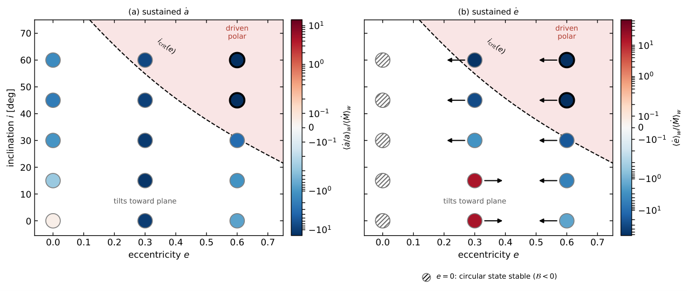
图注：偏心率—倾角网格中的持续轨道响应：在500至1100个轨道周期内，(a)半长轴相对变化率和(b)偏心率变化率的窗口平均值，按平均吸积率归一化。使用对称对数色标，红色表示膨胀/激发，蓝色表示收缩/阻尼，符号约定同Siwek等2023b。色域由两个极向运行之外的最大值决定；极向运行的粗黑边单元饱和，其数值见正文。虚线为临界倾角曲线，极向一侧用阴影表示。(b)中偏心率为0的符号加斜线，因为该处形式上的偏心率变化率为0/0；方程5的括号量在所有倾角均为负，故圆轨道稳定。等长箭头表示固定轨道下变化率的符号，右为激发、左为阻尼。在偏心率0.3时，倾角不超过15°的激发在不小于30°时转为阻尼。
怎么看这张图：这里是固定双星轨道上测得的响应系数，并未让轨道真实随气体反馈演化。极向单元色标饱和，不能凭同一蓝色判断幅度相同；圆轨道格点应看稳定性括号而非除零的形式表达式。 原图直接支持本文核心方法、结果或限制；图注已按HTML原文逐项翻译。
来源与置信度：arXiv HTML；source verified；https://arxiv.org/html/2610.31688v1/figure7.png
6. Image Morphology of Misaligned Magnetically Arrested Disks
- 来源：arXiv / astro-ph.HE
- 链接：https://arxiv.org/abs/2610.31754
- 作者：Samuel Feyan, Cora Prather, Dominic O. Chang, Daniel C. M. Palumbo, Koushik Chatterjee, Michael D. Johnson
- 公告 / 来源日期：2026-10-26
- 阅读层级：相关简报
- 评分：novelty 7/10，importance 7/10，relevance 8/10，final 8.35/10
- 推荐理由：倾斜MAD合成图像说明逆行盘自旋偏置，参数网格与简化发射模型给出有用边界，尚无观测检验。
中文题目：倾斜磁阻塞盘会怎样偏置黑洞成像自旋？
问题、方法与结论：作者对五种正逆向自旋、四种初始盘倾角的20组KHARMA广义相对论磁流体模拟作230 GHz射线追踪，再用轴对称双锥半解析图像模型拟合。高正向自旋的内盘趋于对齐，图像对初始倾角较不敏感；逆向或较低自旋的盘可保持翘曲，简化模型为匹配图像而改变自旋，部分情形偏差超过50%。
意义与贡献：这说明具有漂亮环形结构的拟合图像未必给出无偏的自旋。倾斜改变近视界发射位置与投影形状，模型可能用自旋等参数补偿未建模几何。结果针对成像模型失配，不能直接视作现有EHT黑洞自旋测量已经被推翻。
可借鉴之处：研究将流体几何、发射位置及最佳拟合参数配对展示，便于追溯偏差来源。图像按M87质量、距离与230 GHz流量标定，固定电子温度处方，使用最后1000个引力时间的平均图；拟合目标是归一化图像互相关，不是带实际观测噪声的可见度贝叶斯似然。
局限与关注点：观察方向按内喷流选择，未全面边缘化方位；磁化率大于1的区域被排除，电子加热处方亦固定。拟合程序用自旋绝对值，逆向性由流速方向表示，图6不能读成恢复了自旋正负。一个大倾角案例还受极区边界相互作用影响，需更广模拟与真实观测采样检验。
图6
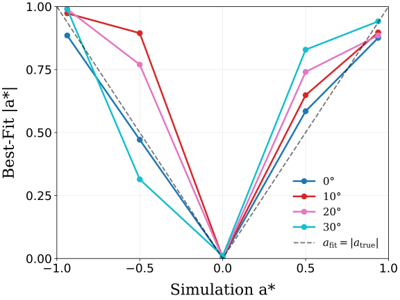
图注：将图5的模型最佳拟合自旋与图2图像的真实GRMHD自旋比较，覆盖全部倾角。虚线表示模型准确恢复真实黑洞自旋的位置。比较采用真实自旋的绝对值，因为Krang以反转流体速度方向表示逆向吸积，而不是赋予负自旋。
怎么看这张图：偏离对角线展示图像模型失配的偏差，不能读成观测置信区间。尤其要注意横轴绝对值，图中不直接检验黑洞自旋符号的恢复。 原图直接支持本文核心方法、结果或限制；图注已按HTML原文逐项翻译。
来源与置信度：arXiv HTML；source verified；https://arxiv.org/html/2610.31754v1/true_spin_vs_bestfit_spin.svg
7. A Unified Model for Radioactive Signatures and Source Identifiability in Neutron Star Mergers
- 来源：arXiv / astro-ph.HE
- 链接：https://arxiv.org/abs/2610.32047
- 作者：Hisham Anwer
- 公告 / 来源日期：2026-10-26
- 阅读层级：相关简报
- 评分：novelty 7/10，importance 7/10，relevance 8/10，final 8.35/10
- 推荐理由：核素源归因加入响应退化及颜色信息，明确Cf254可识别性边界，真实事件仅基准比较。
中文题目：千新星有裂变供能，仍可能辨认不出 ²⁵⁴Cf
问题、方法与结论：作者将核衰变供能、粒子沉积与辐射逃逸串成响应模型，问晚期光变能否唯一归属²⁵⁴Cf。对含Cf的合成参考曲线，允许不含Cf的β/α核素配额与抛射物参数在限定范围内调整，再求最接近的竞争曲线。即便Cf贡献第90天约38%的光度，独立α种子方案在5%假阳性控制下，识别Cf的解析功效上限仍仅6.20%。
意义与贡献：贡献大不等于可辨识：不同核素的沉积与辐射响应可以相互补偿。论文将这种退化从“拟合也不错”的描述提升为指定高斯噪声与备择族下的检验上界，适合评估一个核素声称究竟需要排除哪些替代库存。
可借鉴之处：可借鉴的是删除目标核素后重新优化所有可允许的竞争成分，并用凸优化对偶证书检查最小距离；多个可行库存还能共同收紧界限。增加颜色信息有帮助，但颜色响应自身也可能被核素与抛射参数吸收，需要重新优化，不能假定每增加一个波段都独立破除退化。
局限与关注点：6.20%是合成实验的功效上限，不是Cf存在概率，也不是观测显著性。误差协方差固定在参考模型，灰输运与核素配额均有限。AT 2023vfi只作衰减指数基准：参考及竞争模型都比重建衰减浅约1.5个所报误差，未拟合该事件，亦未解决复合和时变不透明度。
图9
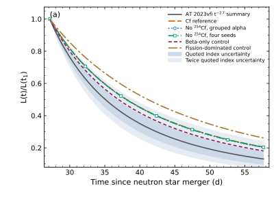
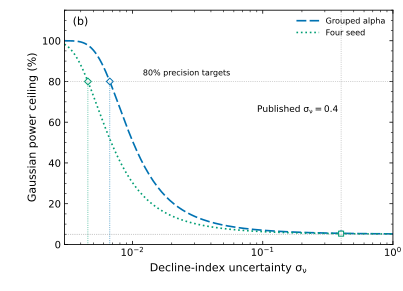
图注：观测衰减精度与输运后不同源混合的范围。(a)含Cf参考、保留的不含Cf备择、仅β以及构造的裂变主导曲线，均在第一次JWST历元归一化；裂变主导曲线在参考抛射物条件下将Y254提高十倍。AT 2023vfi的中心摘要值与带状区域采用衰减指数2.7±0.4（参考22），外带为该不确定度的两倍。参考与备择的衰减比重建值浅约1.5个所报误差，而彼此差异小得多。带状区域代表固定归一化下相关的指数不确定度。(b)保留模型对的高斯检验功效上限随衰减指数不确定度的变化。空心符号标出已发表不确定度，辅助线表示5%假阳性率及80%功效的精度目标。两图均是摘要统计基准比较，没有进行事件拟合。
怎么看这张图：颜色分开了不同物理混合，但含Cf与优化的不含Cf曲线仍接近。右图是允许的识别功效上界，不是后验概率；提高衰减精度也需重新检查不透明度和余辉扣除。 原图直接支持本文核心方法、结果或限制；图注已按HTML原文逐项翻译。
来源与置信度：arXiv HTML；source verified；https://arxiv.org/html/2610.32047v1/fig9a.svg；https://arxiv.org/html/2610.32047v1/fig9b.svg
8. A Framework for Analysing Nebular-Phase JWST Supernova Spectra with Application to Type Ic SN 2024aecx
- 来源：arXiv / astro-ph.HE
- 链接：https://arxiv.org/abs/2610.32323
- 作者：S. Barmentloo, A. Jerkstrand
- 公告 / 来源日期：2026-10-26
- 阅读层级：相关简报
- 评分：novelty 7/10，importance 8/10，relevance 7/10，final 8.35/10
- 推荐理由：JWST星云谱建立可复用元素诊断并量化氯质量和Ni气泡，单源示范与LTE/NLTE适用区需核。
中文题目：JWST 中红外超新星谱：从谱线光深到氯与镍产额
问题、方法与结论：作者建立中红外禁线的局域热平衡判据，并用112个SUMO非局域热平衡模型标定电子密度、光深和适用时段，应用于SN 2024aecx爆炸后167天的JWST谱。对每条线作5000次噪声、连续谱及线型选择抽样，联合Ni/Co线估计温度、离化比例和光深。Fe/He区温度约3680 K、体积填充因子约0.059；扣除Ni I混合后，中性氯质量约5.1×10⁻⁴个太阳质量。
意义与贡献：中红外谱线更容易保持接近热平衡，使核合成诊断部分转化为可追踪的解析约束。氯产额比所用氦星网格高数倍，为奇原子序数元素低估问题增加一个独立天体案例；小填充因子则提示本源的放射性“镍泡”膨胀较弱。
可借鉴之处：方法价值在于先判断谱线处于光学薄/厚和LTE/NLTE的哪一区域，再选择能约束质量还是几何的表达式。线光度比不应重复加入共同距离误差；绝对质量则要传播11.3±1.1 Mpc的距离误差。不同连续谱和高斯/抛物线线型的影响通过抽样纳入，而非固定一个最好看的分解。
局限与关注点：这是单历元、模型辅助的诊断，镍泡与壳层合并解释仍需多历元验证。中性Ni/Co碰撞强度和复合率有缺口，影响离化校正；本源IIb/Ic分类也存在讨论。原文氩质量在表3与总结出现十倍量级不一致，本简报不引用该值，不将原子数据或版本问题掩盖成精确测量。
图7
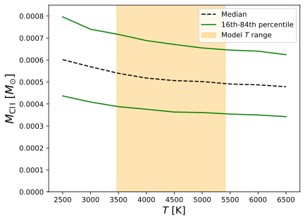
图注：中性氯质量估计随温度的变化。按第5.1.2节，约束已校正[Ni I] 11.31 μm的估计光度贡献。模型温度范围包括Si/S、O/Si/S和O/Ne/Mg区，因为至少在一个爆炸模型中，这些区域各包含超过10%的氯。SN 2024aecx的中性氯质量估计比模型网格中的氯质量高数倍，与文献中超新星模型系统性低估奇原子序数元素产额的现象一致（见第5.1.2节）。
怎么看这张图：温度变化不足以单独抹平观测与模型差距，但这仍是扣除混线并采用离化/LTE条件后的估计。壳层合并是候选解释，未在这张图中被唯一识别。 原图直接支持本文核心方法、结果或限制；图注已按HTML原文逐项翻译。
来源与置信度：arXiv HTML；source verified；https://arxiv.org/html/2610.32323v1/M_Cl_vs_T.svg
9. Tracking the Evolution of Supermassive Black Hole Binaries with Pulsar Terms
- 来源：arXiv / astro-ph.HE
- 链接：https://arxiv.org/abs/2610.32736
- 作者：Bence Bécsy, Magdalena Siwek
- 公告 / 来源日期：2026-10-26
- 阅读层级：相关简报
- 评分：novelty 7/10，importance 7/10，relevance 8/10，final 8.35/10
- 推荐理由：脉冲星项跨万年测硬化的Fisher预报给出环境效应可测性与啁啾质量偏置，尚非探测。
中文题目：PTA 脉冲星项可揭示环境，也会留下啁啾质量暗偏差
问题、方法与结论：脉冲星计时阵列的地球项和脉冲星项看到双黑洞相隔数千年的演化，作者据此预测连续引力波的环境约束。以116颗脉冲星、30年观测配置，用Fisher频率误差和脉冲星距离不确定度构造推断，再加入气体或通用幂律轨道作用。对啁啾质量10⁹个太阳质量、地球项轨道频率10 nHz、信噪比约12的案例，强气体作用可在未被清楚识别时把真空模型推得的啁啾质量拉低。
意义与贡献：环境效应不一定表现为一个显著新成分，也可能表现为看似精确的参数偏移。气体力矩与引力波驱动演化的退化取决于质量比和轨道尺度；低质量、气体驱动外迁的案例更容易排除真空，而一般大质量系统的气体检测并不乐观。
可借鉴之处：可借鉴的是先把各脉冲星项频率作为独立量测，再对距离误差进行边缘化，不强行跨千年相位连接。对通用环境逐指数给约束，比报一个统一幅度上限更有意义；近似与少量完整贝叶斯检验在高信噪比区相差约20–30%，需保留预测精度边界。
局限与关注点：图中fEdd是吸收盘参数的力矩尺度，100对应示例盘质量约为双星1%，不能直译成已测得百倍爱丁顿吸积。轨道频率10 nHz对应引力波20 nHz。当前框架偏向圆轨道、高信噪比简化，忽略部分噪声和定位耦合；这些是预测而非PTA已经发现环境。
图6
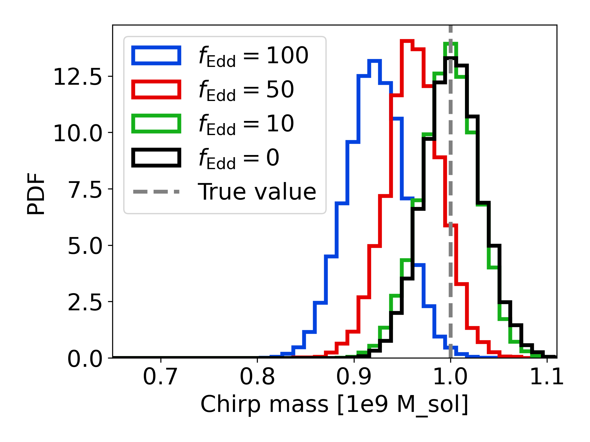
图注：用30年IPTA配置说明啁啾质量的隐蔽偏差。显示信噪比约12、啁啾质量10⁹个太阳质量、等质量圆轨道双星的啁啾质量后验，地球项轨道频率为10 nHz，推断假定真空演化。不同曲线对应设定气体力矩强度的fEdd为100、50、10、0，在地球项频率处约相当于盘质量为双星总质量的1%、0.5%、0.1%、0%。当fEdd不小于约50时，啁啾质量测量产生偏差。
怎么看这张图：每条曲线都用真空模型恢复，但注入环境不同，故可出现窄而偏的后验。fEdd是此气体处方的强度尺度；10 nHz为轨道频率，并非20 nHz的引力波频率。 原图直接支持本文核心方法、结果或限制；图注已按HTML原文逐项翻译。
来源与置信度：arXiv HTML；source verified；https://arxiv.org/html/2610.32736v1/chirp_mass_posterior_ipta_extendto30yr_mc1e9_f20nHz_q1_various_fedds_171025.png
10. Probing the star-forming environment of GRB across cosmic ages with high-resolution X-ray spectroscopy: From \textit{XMM-Newton}/RGS and \textit{XRISM}/Resolve to \textit{NewAthena}/X-IFU
- 来源：arXiv / astro-ph.HE
- 链接：https://arxiv.org/abs/2610.32786
- 作者：Luigi Piro, Aishwarya Linesh Thakur, Alfredo Luminari, Fabrizio Nicastro, Yair Krongold
- 公告 / 来源日期：2026-10-26
- 阅读层级：相关简报
- 评分：novelty 7/10，importance 7/10，relevance 8/10，final 8.35/10
- 推荐理由：时变光致电离与RGS线证据及XRISM预测有价值，单例约3sigma及触发机会需谨慎。
中文题目：GRB 周围电离气体：RGS 多线弱证据与量热计预测
问题、方法与结论：作者用时变光电离模型TEPID预测GRB周围分层气体的窄吸收线，重新分析六个明亮余辉的XMM/RGS谱。GRB 090618中固定红移和十条线相对强度、只放开共同归一化，改善Cash统计量7.5；一万次无谱线模拟给约1.5×10⁻³概率，即约3σ的条件性证据。自由红移扫描最低点0.540±0.003与光学一致；另一源060729的模型改善主要来自吸收边而非窄线。
意义与贡献：结果把连续吸收曲率与窄线证据分开，说明强烈时变、空间分层的电离环境有机会被直接诊断。约3σ来自多条转变共同贡献，不是某一条铁线的高显著发现，也未证明第三星族环境已经被看到。
可借鉴之处：作者过滤背景耀发、合并RGS一阶谱，用低计数Cash拟合与MCMC估参，并用零假设模拟校准谱线改进。后续XRISM和NewAthena预测结合等值宽度、响应与余辉亮度，显示快速触发和低能覆盖对环境密度、红移及金属丰度的重要性。
局限与关注点：谱线相对强度和目标红移来自给定模型，约3σ不能替代覆盖全部目标、模型选择的全局发现检验。未来约200个余辉的样本规模依赖响应和跟踪假设；高红移H/He吸收移出波段，绝对金属丰度仍难约束。贫Fe而有Si/S的第三星族富集预言依赖产额与电离模型。
图3
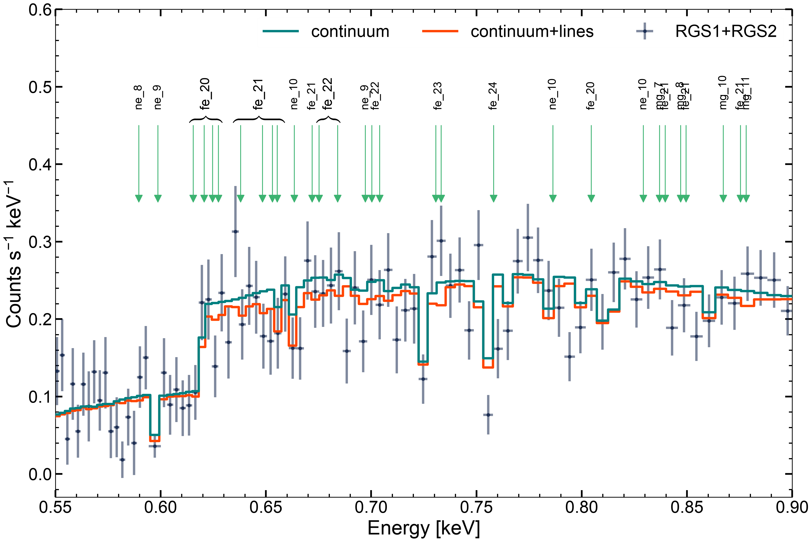
图注：GRB 090618在0.55–0.90 keV的RGS1+2合并计数谱。绿色实线为最佳拟合连续谱，红色实线加入谱线。箭头标出最显著的转变，显示拟合改善来自多条转变的共同探测。完整RGS拟合范围0.33–2.5 keV的图见附录图14。注意连续谱中的凹陷是仪器特征。
怎么看这张图：比较加线前后的联合改善，不挑单个凹陷作发现。约3σ来自固定模板和红移下的零假设模拟，连续谱本身的仪器凹陷尤其不能当作天体吸收线。 原图直接支持本文核心方法、结果或限制；图注已按HTML原文逐项翻译。
来源与置信度：arXiv HTML；source verified；https://arxiv.org/html/2610.32786v1/Final_figures/RGS_spectrum_final.png
11. A Population Synthesis Model for Odd Radio Circles Produced by Shock-Bubble Interactions
- 来源：arXiv / astro-ph.HE
- 链接：https://arxiv.org/abs/2610.32916
- 作者：Yiting Wang, Sebastian Heinz, Alexander Tchekhovskoy
- 公告 / 来源日期：2026-10-26
- 阅读层级：相关简报
- 评分：novelty 7/10，importance 7/10，relevance 8/10，final 8.35/10
- 推荐理由：激波气泡ORC种群合成同时预测数目、尺度和低频隐藏群体，数目相符不能掩盖尺寸红移不符。
中文题目：奇异射电环的种群检验：数目相符，尺寸与红移仍有张力
问题、方法与结论：作者将星系质量函数、射电AGN发生率、暗晕并合和气泡存活时间组成蒙特卡洛种群，再从激波—气泡磁流体网格计算环形射电辐射，并施加巡天的角尺度、总流量、面亮度与取向选择。ASKAP-EMU先导巡天预测2.7个可见环，与已知3个数量级相符；同一模型在144 MHz的LoTSS预测268个，其中约7.5个能有1.4 GHz对应体。
意义与贡献：这把单个形态可行的激波气泡模型推进到总体发生率检验，并预言大量陡谱、低面亮度、缺少高频对应的射电环。不过少数对象的数量吻合部分是偶然，作者明确不把2.7对3当成精确拟合或唯一来源证明。
可借鉴之处：可借鉴的是逐层记录选择函数：多数气泡因不处于可见环阶段或角尺度太小被排除，不能只按总流量估计完备性。模型把AGN化石电子再激活、气泡浮升寿命与巡天分辨率连起来，展示环境物理和发现偏差共同决定已知样本。
局限与关注点：预测EMU环的中位半径约50 kpc、红移0.09，低于候选宿主推得的约100–200 kpc和0.2–0.6。宿主错配只是可能解释，也可能需要更大更亮的气泡或其他形成渠道。单气泡近似不能产生双头环，粒子再加速与固定局地标度关系是主要限制，268不是已发现数量。
图9

图注：全部化石气泡（灰）、存活气泡（蓝）及通过全部EMU切选的可观测环（红）的归一化分布：(a)激波马赫数，每单位马赫数的概率密度；(b)激波后的环半径，每dex；(c)观测红移，每单位红移；(d)环年龄，即距最近一次激波的时间，每dex。在(a)、(c)、(d)中灰蓝曲线重合，因为马赫数、观测红移和最近激波时间不进入存活判据。(a)阴影标出马赫数小于1.67，低于流量网格的最低值。(b)只有当前呈环的气泡才有环半径，蓝线因此只含重标度年龄处于模拟环寿命内的存活气泡。(c)虚线直方图和短刻线为24个已知ORC及候选环中心星系的红移，斜线区表示超出模型范围的红移大于0.55。(d)的陡边来自并合采样对最近激波时间设置的1 Gyr上限。中位值标于图例。
怎么看这张图：红色可见样本与灰色母体区别很大，体现选择效应；其红移仍低于所认定宿主的分布，这是模型张力。宿主错配可被检验，但不能仅凭该张力断言观测关联错误。 原图直接支持本文核心方法、结果或限制；图注已按HTML原文逐项翻译。
来源与置信度：arXiv HTML；source verified；https://arxiv.org/html/2610.32916v1/ring_mach_radius_redshift.svg
12. Tilt, warp, and dissipation flare in hydrodynamic disks around kicked compact objects
- 来源：arXiv / astro-ph.HE
- 链接：https://arxiv.org/abs/2610.31990
- 作者：Yoonsoo Kim
- 公告 / 来源日期：2026-10-26
- 阅读层级：相关简报
- 评分：novelty 7/10，importance 7/10，relevance 7/10，final 8.00/10
- 推荐理由：冲量踢动解析与三维模拟给出盘倾斜和耗散耀发标度，但发光效率与冷却尚模型依赖。
中文题目：黑洞受踢后：选择性失去气体也能留下倾斜盘
问题、方法与结论：作者解析计算中心致密天体突然获得速度后，原Kepler盘哪些气体仍被束缚，再用AthenaK三维牛顿流体模拟验证。接近盘面的踢动不对称地移除角动量，使剩余气体获得大倾角，甚至逆转；非线性碰撞后仍能松弛为相干旋转环面。被束缚物质获得的特征动能约一成可转为内能，效率随踢动方向及初始面密度分布变化。
意义与贡献：它提供一种不要求持续外加失配力矩的倾斜盘机制：关键是留下来的气体并非原盘的对称子集。它也把反冲后暂现耀发与几何重排连接起来，可用于超大质量黑洞并合、AGN盘内恒星质量黑洞或新生致密星的条件性讨论。
可借鉴之处：解析束缚半径尺度为GM/Vkick²，允许先判断实际盘大小是否足以产生不对称失重；再比较模拟的质量与角动量，能辨别流体效应是否推翻弹道估计。作者区分弹道束缚和含热焓的Bernoulli判据，避免把受热后可能逸出的气体仍计作永久残余盘。
局限与关注点：所谓约10⁴³ erg/s耀发是假定辐射有效、强踢动约1000 km/s的量级估算，模拟并未计算冷却光曲线。实际演化无磁场、无中心质量损失，也不采用吸积汇；有限盘外缘可能压低倾斜，瞬态翘曲寿命需要更高分辨率。不能将内能增加直接视为可见光度测量。 原文内能增量还包含绝热压缩/膨胀，未独立分离不可逆耗散。
图8
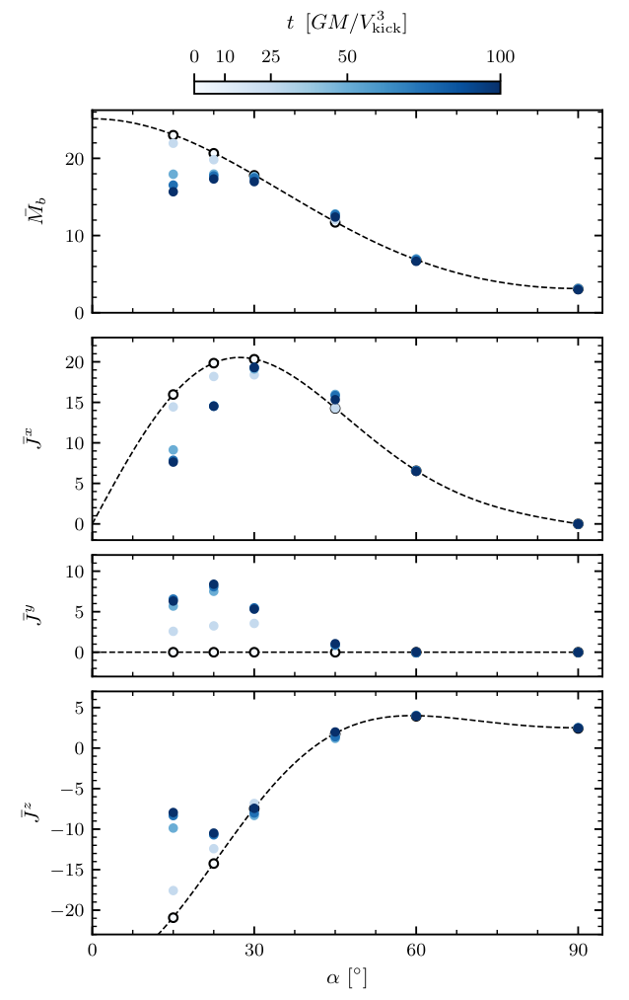
图注：初始面密度指数p=0的盘中，被束缚气体总质量与角动量的模拟结果（符号）和解析估计（虚线）。模拟数据分别取无量纲时刻0、10、25、50、100。
怎么看这张图：解析结果能抓住残余气体的质量和角动量，支持选择性失重形成倾斜。四行分别为质量与三个角动量分量；时间由浅至深。该图不校准辐射效率，也未给冷却后的光曲线。 HTML结果图缺失，已从同版本PDF第8页核验提取。
来源与置信度：arXiv PDF；source verified；https://arxiv.org/pdf/2610.31990v1#page=8
说明
评分由 LLM 给出初评，再由本地阈值策略过滤；IACT、TeV 伽马射线和高能中微子天文学按重点方向处理。